Gordon Smyth, Natalie Thorne and James Wettenhall
The
Walter and Eliza Hall Institute of Medical Research
09 October 2004
Limma is a package for the analysis of gene expression microarray data, especially the use of linear models for analysing designed experiments and the assessment of differential expression. Limma provides the ability to analyse comparisons between many RNA targets simultaneously. It has features which make the analyses stable even for experiments with small number of arrays - this is achieved by “borrowing” information across genes. The normalization and exploratory data analysis functions are for two-colour spotted microarrays. The linear model and differential expression functions apply to all microarrays including Affymetrix and other single-channel microarray experiments.
This guide gives a tutorial-style introduction to the main limma features but
does not describe every feature of the package. A full description of the
package is given by the individual function help documents available from the R
online help system. To access the online help, type help(package=limma)
at the R prompt or else start the html help system using help.start()
or the Windows drop-down help menu.
The Bioconductor package marray provides alternative functions for reading and normalizing spotted microarray data. The marray package provides flexible location and scale normalization routines for log-ratios from two-color arrays. The limma package overlaps with marray in functionality but is based on a more general separation between within-array and between-array normalization. If you are using limma in conjunction with the marray package, see Section 10. The Bioconductor package affy provides functions for reading and normalizing Affymetrix microarray data. If you are using the affy package, see Section 7.2 and the relevant case studies.
This guide describes limma as a command-driven package. Packages limmaGUI and affylmGUI are also available which provides graphical user interfaces to the most commonly used functions in limma (Wettenhall and Smyth, 2004). Both packages are available from Bioconductor or from http://bioinf.wehi.edu.au/limmaGUI. The package limmaGUI is for use with two-color data while afflmGUI is for Affymetrix data.
This tutorial was prepared using R Version 1.9.0 for Windows and limma version 1.6.7.
Help with limma is available by sending questions or problems to the Bioconductor mailing list bioconductor@stat.math.ethz.ch.
Limma is a package for the R computing environment and it is assumed that you have already installed R. See the R project at http://www.r-project.org.
Installing from CRAN. Limma is available as a contributed package from the R Project CRAN site. This is the recommended repository from which to obtain limma. If you are using R on a system with a suitable internet connection and with installation privileges on your computer, you should be able to install it via
> install.packages("limma")
at the R prompt from an internet-connected computer. If you are using Windows, use the drop-down menu [Packages > Install package(s) from CRAN ...].
Installing from the WEHI. The limma home page is http://bioinf.wehi.edu.au/limma. The latest version of the package is always available from this page, sometimes a few days ahead of the CRAN site. Unlike CRAN, this page supports only most recent official release of R and does not provide a Mac package build. You should be able to install limma from this page using
> install.packages("limma",contriburl="http://bioinf.wehi.edu.au/limma")
at the R prompt.
Installing from Bioconductor. Limma is available as part of the Bioconductor project at http://www.bioconductor.org. Bioconductor works on a 6-monthly official release cycle, lagging each major R release by a few weeks. This means that Bioconductor software is updated only once every six months, unless you are using the developmental version R. Updates of limma between the Bioconductor official releases should be obtained from one of the above two sites.
Change-log. Limma is updated frequently, often a couple of times a week. The change-log can be viewed at http://bioinf.wehi.edu.au/limma/changelog.txt. It can also be viewed from the R prompt. To see the most recent 20 lines type:
> changeLog(n=20)
Data sets used this manual. The data sets used in the case study examples can be downloaded from http://bioinf.wehi.edu.au/marray/genstat2002.
R is a program for statistical computing. It is a command-driven language meaning that you have to type commands into it rather than pointing and clicking using a mouse. A good way to get started is to type
> help.start()
at the R prompt or, if you're using Windows, to follow the drop-down menu [Help > Html help]. Following the links [Packages > limma] from the html help page will lead you to the contents page of help topics for commands in limma.
Before you can use any limma commands you have to load the package by typing
> library(limma)
at the R prompt. You can get help on any function in any loaded package by typing ? and the function name at the R prompt, for example
> ?read.maimages
for detailed help on the read.maimages function. Anything that you create in
R is an "object". Objects might include data sets, variables, functions,
anything at all. For example
> x <- 2
will create a variable x and will assign it the value 2. At any
stage of your R session you can type
> objects()
to get a list of all the objects you have created. You see show the contents
of any object by typing the name of the object at the prompt, for example either of the
following commands will print out the contents of x:
> show(x) > x
We hope that you can use limma without having to spend a lot of time learning about the R language itself but a little knowledge in this direction will be very helpful, especially when you want to do something not explicitly provided for in limma or in the other Bioconductor packages. For more details about the R language see An Introduction to R which is available from the online help.
For those who want to see very quickly what a limma analysis might look like for cDNA data, here is a quick analysis of four replicate arrays (including two dye-swaps). The data has been scanned using an Axon scanner, producing a GenePix Array List (GAL) file, and then the intensities have been captured from the images using SPOT software. The GAL file and the image analysis files are in the current working directory of R. For more detail about the data see the Swirl Data example below.
> targets <- readTargets("SwirlSample.txt") # Read file containing info about the hybridizations,
# including names of files containing the intensity data
> RG <- read.maimages(targets$FileName, source="spot") # Read in the data
> RG$genes <- readGAL() # Read in GAL file containing gene names, only needed if using SPOT!
> RG$printer <- getLayout(RG$genes) # Set printer layout information
> MA <- normalizeWithinArrays(RG) # Print-tip group loess normalization
> MA <- normalizeBetweenArrays(MA) # Scale normalization between arrays, optional
> fit <- lmFit(MA, design=c(-1,1,-1,1)) # Estimate all the fold changes by fitting a linear model.
# The design matrix indicates which arrays are dye-swaps
> fit <- eBayes(fit) # Apply Bayesian smoothing to the standard errors (very important!)
> options(digits=3)
> topTable(fit, n=30, adjust="fdr") # Show the top 30 genes, control false discovery rate
Block Row Column ID Name M A t P.Value B
3721 8 2 1 control BMP2 -2.21 12.1 -21.1 0.000357 7.96
1609 4 2 1 control BMP2 -2.30 13.1 -20.3 0.000357 7.78
3723 8 2 3 control Dlx3 -2.18 13.3 -20.0 0.000357 7.71
1611 4 2 3 control Dlx3 -2.18 13.5 -19.6 0.000357 7.62
8295 16 16 15 fb94h06 20-L12 1.27 12.0 14.1 0.002067 5.78
7036 14 8 4 fb40h07 7-D14 1.35 13.8 13.5 0.002067 5.54
515 1 22 11 fc22a09 27-E17 1.27 13.2 13.4 0.002067 5.48
5075 10 14 11 fb85f09 18-G18 1.28 14.4 13.4 0.002067 5.48
7307 14 19 11 fc10h09 24-H18 1.20 13.4 13.2 0.002067 5.40
319 1 14 7 fb85a01 18-E1 -1.29 12.5 -13.1 0.002067 5.32
2961 6 14 9 fb85d05 18-F10 -2.69 10.3 -13.0 0.002067 5.29
4032 8 14 24 fb87d12 18-N24 1.27 14.2 12.8 0.002067 5.22
6903 14 2 15 control Vox -1.26 13.4 -12.8 0.002067 5.20
4546 9 14 10 fb85e07 18-G13 1.23 14.2 12.8 0.002067 5.18
683 2 7 11 fb37b09 6-E18 1.31 13.3 12.4 0.002182 5.02
1697 4 5 17 fb26b10 3-I20 1.09 13.3 12.4 0.002182 4.97
7491 15 5 3 fb24g06 3-D11 1.33 13.6 12.3 0.002182 4.96
4188 8 21 12 fc18d12 26-F24 -1.25 12.1 -12.2 0.002209 4.89
4380 9 7 12 fb37e11 6-G21 1.23 14.0 12.0 0.002216 4.80
3726 8 2 6 control fli-1 -1.32 10.3 -11.9 0.002216 4.76
2679 6 2 15 control Vox -1.25 13.4 -11.9 0.002216 4.71
5931 12 6 3 fb32f06 5-C12 -1.10 13.0 -11.7 0.002216 4.63
7602 15 9 18 fb50g12 9-L23 1.16 14.0 11.7 0.002216 4.63
2151 5 2 15 control vent -1.40 12.7 -11.7 0.002216 4.62
3790 8 4 22 fb23d08 2-N16 1.16 12.5 11.6 0.002221 4.58
7542 15 7 6 fb36g12 6-D23 1.12 13.5 11.0 0.003000 4.27
4263 9 2 15 control vent -1.41 12.7 -10.8 0.003326 4.13
6375 13 2 15 control vent -1.37 12.5 -10.5 0.004026 3.91
1146 3 4 18 fb22a12 2-I23 1.05 13.7 10.2 0.004242 3.76
157 1 7 13 fb38a01 6-I1 -1.82 10.8 -10.2 0.004242 3.75
This chapter is for two-color arrays. If you are using Affymetrix arrays, you
should use the affy or affyPLM packages to read and normalize the data. If you
have single channel arrays others than Affymetrix, you will need to the read the
intensity data into your R session yourself using the basic R read functions
such as read.table. You will need to create a matrix containing the
log-intensities with rows for probes and columns are arrays.
We assume that an experiment has been conducted with one or more microarrays, all printed with the same library of probes. Each array has been scanned to produce a TIFF image. The TIFF images have then been processed using an image analysis program such a ArrayVision, ImageGene, GenePix, QuantArray or SPOT to acquire the red and green foreground and background intensities for each spot. The spot intensities have then been exported from the image analysis program into a series of text files. There should be one file for each array or, in the case of Imagene, two files for each array.
You will need to have the image analysis output files. In most cases these files will include the IDs and names of the probes and possibly other annotation information. A few image analysis programs, for example SPOT, do not write the probe IDs into the output files. In this case you will also need a genelist file which describes the probes. It most cases it is also desirable to have a Targets File which describes which RNA sample was hybridized to each channel of each array. A further optional file is the Spot Types file which identifies special probes such as control spots.
The first step in preparing your data is usually to create a Targets File which lists the RNA target hybridized to each channel of each array. It is normally in tab-delimited text format. It should contain a row for each microarray in your experiment. It should contain a FileName column, giving the file from image-analysis containing raw foreground and background intensities for each slide, a Cy3 column giving the RNA type reverse transcribed and labelled with Cy3 dye for that slide (e.g., Wild Type) and a Cy5 column giving the RNA type reverse transcribed and labelled with Cy5 dye for that slide. For ImaGene files, the FileName column is split into a FileNameCy3 column and a FileNameCy5. As well as the essential columns, you can have a Name column giving an alternative slide name to the default name, "Slide n", where n is the SlideNumber and you can have a Date column, listing the date of the hybridization, and as many extra columns as you like, as long as the column names are unique.
Some examples are shown below.
The ImaGene Targets file below shows the special case of the ImaGene image-processing software which gives two (tab-delimited text) output files for each slide, one for the Cy3 (Green) channel and one for the Cy5 (Red) channel. So instead of having a single FileName column, there are two file name columns: a FileNameCy3 column and a FileNameCy5 column.
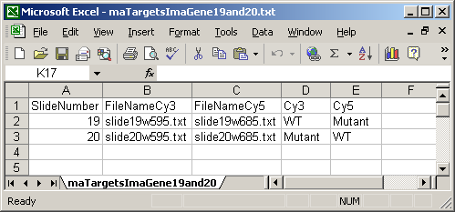
The Date column is optional and is not currently used in limma.
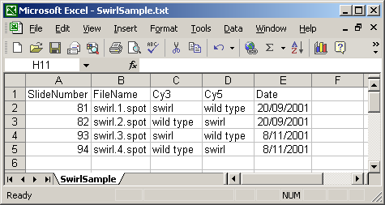
A Name column can be included, giving each array a name which can be used for plotting. In this case, a short name
is used so that a boxplot of all sixteen arrays can be plotted with labels for all arrays along the horizontal axis. If
no Name column is given, then a default name will be given to each slide, e.g. "Slide 1".
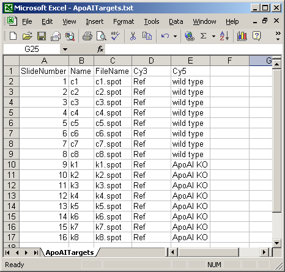
The Targets file below is from an experiment with four different RNA sources. The main Targets file is not shown. The one below is used to analyse the spiked-in scorecard controls. Spike-in controls will generally be analysed separately from genes because the follow different rules, e.g. for genes, the log-ratio between A and B plus the log-ratio between B and C should equal the log-ratio between A and C, but for scorecard controls, all three log (red/green) ratios may be the same.
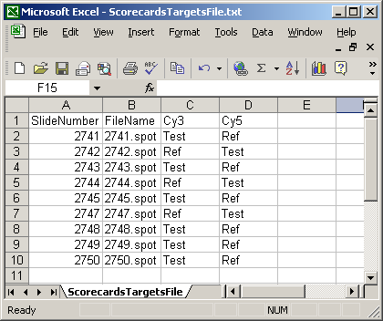
The Targets
File can be read using readTargets():
> targets <- readTargets()
The file can have any name but the default name is Targets.txt.
Let files be a character vector containing the names of the
image analysis output files. The foreground and background intensities can be
read into an RGList object using a command of the form
> RG <- read.maimages(files, source="<imageanalysisprogram>", path="<directory>")
where <imageanalysisprogram> is the name of the image analysis
program and <directory> is the full path of the directory
containing the files. If the files are in the current R working directory then
the argument path can be omitted; see the help entry for
setwd for how to set the current working directory. The file names are
usually read from the Targets File. For example, the Targets File
Targets.txt is in the current working directory together with the SPOT
output files, then one might use
> targets <- readTargets() > RG <- read.maimages(targets$FileName, source="spot")
If the files are GenePix output files then they might be read using
> RG <- read.maimages(targets$FileName, source="genepix")
given an appropriate Targets File. Consult the help entry for read.maimages to see which other
image analysis programs are supported. Files are assumed by default to be
tab-delimited. If the files use a different separator this may be specified
using the sep= argument. For example if the Genepix files were
comma-separated (csv) then the read command would be
> RG <- read.maimages(files, source="genepix", sep=",")
What should you do if your image analysis program is not currently supported by limma? If your output files are of a standard format, you can supply the column names corresponding to the intensities yourself. For example,
> RG <- read.maimages(files, columns=list(Rf="F635 Mean",Gf="F532 Mean",Rb="B635 Median",Gb="B532 Median"))
is exactly equivalent to the earlier command with source="genepix".
"Standard format" means here that there is a unique column name identifying each
column of interest and that there are no lines in the file following the last
line of data. Header information at the start of the file is ok.
It is a good idea to look at your data to check that it has been read in correctly. Type
> show(RG)
to see a print out the first few lines of data. Also try
> summary(RG$R)
to see a five-number summary of the red intensities for each array, and so on.
It is possible to read the data in several steps. If RG1 and
RG2 are two data sets corresponding to different sets of arrays
then
> RG <- cbind(RG1, RG2)
will combine them into one large data set. Data sets can also be subsetted.
For example RG[,1] is the data for the first array while
RG[1:100,] is the data on the first 100 genes.
It is desirable to use the image analysis to compute a weight for each spot between 0 and 1 which indicates the reliability of the acquired intensities at that spot. For example, if the SPOT image analysis program is used and the size of an ideal perfectly circular spot is known to be 100 pixels, then one might use
> RG <- read.maimages(files,source="spot",wt.fun=wtarea(100))
The function wtarea(100) gives full weight to spots with area
100 pixels and down-weights smaller and larger spots. Spots which have zero area
or are more than twice the ideal size are given zero weight. This will create a
component called weights in the RG list. The weights will be used
automatically by functions such as normalizeWithinArrays which operate on
the RG-list.
With GenePix data
> RG <- read.maimages(files,source="genepix",wt.fun=wtflags(0.1))
will give weight 0.1 to any spot which receives a negative flag from the GenePix program.
The appropriate way to computing spot quality weights depends on the image analysis program
that you are using. Consult the
help entry QualityWeights to see what quality weight functions are
available. The wt.fun argument is very flexible and
allows you to construct your own weights. The wt.fun argument can
be any function which takes a data set as argument and computes the desired
weights. For example, if you wish to give zero weight to all Genepix flags less
than -50 you could use
> myfun <- function(x) as.numeric(x$Flags > -50.5) > RG <- read.maimages(files, source="genepix", wt.fun=myfun)
The wt.fun facility is very general and can be used to compute
weights based on any number of columns in the image analysis files. For example,
some researchers like to filter out spots if the foreground mean and median from
GenePix for a given spot differ by more than a certain threshold, say 50. This
could be achieved by
> myfun <- function(x, threshold=50) {
+ okred <- abs(x[,"F635 Median"]-x[,"F635 Mean"]) < threshold
+ okgreen <- abs(x[,"F532 Median"]-x[,"F532 Mean"]) < threshold
+ as.numeric(okgreen & okred)
+}
> RG <- read.maimages(files, source="genepix", wt.fun=myfun)
Then all the "bad" spots will get weight zero which, in limma, is equivalent
to flagging them out. The definition of myfun here could be
replaced with any other code to compute weights using the columns in the GenePix
output files.
In most cases the RGList RG read by read.maimages()
will contain a component RG$genes containing the probe IDs and
other probe-specific information. In some cases the genes component
will be not be set because there is no probe information in the image analysis
output files. An example is output from the SPOT program. In such cases, the
probe information needs to be read separately.
If the arrays have been scanned with an Axon scanner, then the gene names will be available in a GenePix Array List (GAL) file. If the GAL file has extension “gal” and is in the current working directory, then it may be read into a data.frame by
> RG$genes <- readGAL()
Non-Genepix gene lists can be read into R using the function \texttt{read.table} from R base.
Once the gene array list is available, the print layout of the arrays can be extracted from it by
> RG$printer <- getLayout(RG$genes)
This will set the number of pins, or print-tips, using during the printing of the arrays. This determines the number of what are often called grids or meta rows and columns on the arrays.
The Spot Types file (STF) is another optional tab-delimited text file which
allows you to identify different types of spots from the gene list. The STF is
typically used to distinguish control spots from those corresponding to genes of
interest, to distinguish positive from negative controls, ratio from calibration
controls and so on. The SPF should have a column giving the names of the
different spot-types. We will assume that this column is called SpotType.
One or more other columns should have the same names as columns in the gene list
and should contain patterns or regular expressions sufficient to identify the
spot-type. Any other columns are assumed to contain plotting parameters, such as
colors or symbols, to be associated with the spot-types. The STF should have one
row for every spot-type which you want to distinguish. The STF is used to set
the control status of each spot on the arrays so that plots may highlight
different types of spots in an appropriate way.
The STF uses simplified regular expressions to match patterns. For example, 'AA*'
means any string starting with 'AA', '*AA' means any
code ending with 'AA', 'AA' means exactly these two
letters, '*AA*' means any string containing 'AA', 'AA.'
means 'AA' followed by exactly one other character and 'AA\.'
means exactly 'AA' followed by a period and no other characters.
For those familiar with regular expressions, any other regular expressions are
allowed but the codes ^ for beginning of string and $
for end of string should be excluded. Note that the patterns are matched
sequentially from first to last, so more general patterns should be included
first. For example, it is often a good idea to include a default spot-type as
the first line in the STF with pattern '*' for all the
pattern-matching columns and with default plotting parameters.
Here is a short STF appropriate for the ApoAI data:
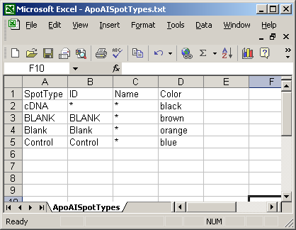In this example, the columns ID and Name are found in the gene-list and contain patterns to match. The asterisks are wildcards which can represent anything. Be careful to use upper or lower case as appropriate and don't insert any extra spaces. The remaining column gives colors to be associated with the different types of points.
Here is a STF below appropriate for arrays with Lucidea Universal ScoreCard control spots.
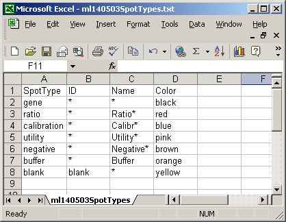You can
read the STF using readSpotTypes. For example, if the file has
the default name SpotTypes.txt you can use simply
> types <- readSpotTypes()
The spot types file is used by the controlStatus() function to set the status of
each spot on the array, for example
> RG$genes$Status <- controlStatus(types, RG)
if RG is an RGList object with the gene-list set.
Then
> plotMA(RG)
will produce an MA-Plot with colors, symbols and sizes and given in the STF.
It is advisable to display your data in various ways as a quality check and
to check for unexpected effects. We recommend an imageplot of the raw log-ratios
and an MA-plot of the raw data for each array as a minimum routine displays. The
following is an example MA-Plot produced by plotMA for an
MAList object with spot-types Gene, Unknown, Control, U03, D03, U10, D10,
U25, D25, Sensitivity and Buffer set using a spot-types file and the function
controlStatus (data not included). This plot shows up and
down-regulated spike-in control spots as well as negative controls and
calibration or sensitivity controls. See the Swirl data case study for other
examples.
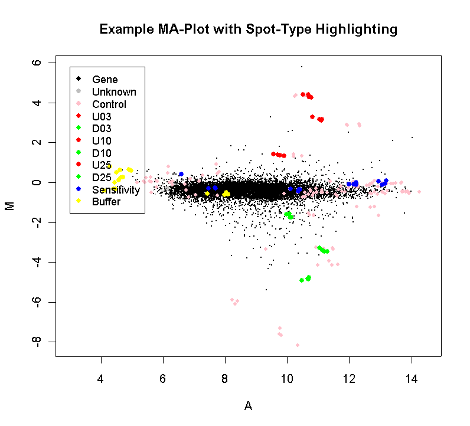
Limma implements a range of normalization methods for spotted microarrays. Smyth and Speed (2003) describe some of the mostly commonly used methods. Most of the examples given in this manual use print-tip loess normalization as the major method. Print-tip loess normalization is performed by
> MA <- normalizeWithinArrays(RG)
By default, limma will subtract the background from the foreground
intensities as part of the normalization process using
normalizeWithinArrays so there is no need for any special action on the
part of users. If you want to over-ride this default background correct, for
example to ensure that all the corrected intensities are positive, then use the
backgroundCorrect function. For example we generally find
> RG <- backgroundCorrect(RG, method="normexp", offset=50)
to be superior for differential expression purposes to background subtraction
with most image analysis programs. This method adjusts the foreground adaptively
for the background intensities and results in strictly positive adjusted
intensities, i.e., negative intensities are avoided. The use of an offset forces
the log-ratios for very low intensities spots towards zero. No further background correction will be performed
when normalizeWithinArrays is used subsequently to normalize the
intensities.
Limma contains some more sophisticated normalization methods. Some between-array normalization methods are discussed in Section 12 of this guide.
The package limma uses an approach called linear models to analyse designed microarray experiments. This approach allows very general experiments to be analysed just as easily as a simple replicated experiment. The approach is outlined in Smyth (2004) and Yang and Speed (2002). The approach requires one or two matrices to be specified. The first is the design matrix which indicates in effect which RNA samples have been applied to each array. The second is the contrast matrix which specifies which comparisons you would like to make between the RNA samples. For very simple experiments, you may not need to specify the contrast matrix.
The philosophy of the approach is as follows. You have to start by fitting a linear model to your data which fully models the systematic part of your data. The model is specified by the design matrix. Each row of the design matrix corresponds to an array in your experiment and each column corresponds to a coefficient which is used to describe the RNA sources in your experiment. With Affymetrix or single-channel data, or with two-color with a common reference, you will need as many coefficients as you have distinct RNA sources, no more and no less. With direct-design two-color data you will need one fewer coefficient than you have distinct RNA sources, unless you wish to estimate a dye-effect for each gene, in which case the number of RNA sources and the number of coefficients will be the same. Any set of independent coefficients will do, providing they describe all your treatments. The main purpose of this step is to estimate the variability in the data, hence the systematic part needs to modelled so it can be distinguished from random variation.
In practice the requirement to have exactly as many coefficients as RNA sources is too restrictive in terms of questions you might want to answer. You might be interested in more or fewer comparisons between the RNA source. Hence the contrasts step is provided so that you can take the initial coefficients and compare them in as many ways as you want to answer any questions you might have, regardless of how many or how few these might be.
If you have data from Affymetrix experiments, from single-channel spotted microarrays or from spotted microarrays using a common reference, then linear modeling is the same as ordinary analysis of variance or multiple regression except that a model is fitted for every gene. With data of this type you can create design matrices as one would do for ordinary modeling with univariate data. If you have data from spotted microarrays using a direct design, i.e., a connected design with no common reference, then the linear modeling approach is very powerful but the creation of the design matrix may require more statistical knowledge.
For statistical analysis and assessing differential expression, limma uses an empirical Bayes method to moderate the standard errors of the estimated log-fold changes. This results in more stable inference and improved power, especially for experiments with small numbers of arrays (Smyth, 2004). For arrays with within-array replicate spots, limma uses a pooled correlation method to make full use of the duplicate spots (Smyth et al, 2003).
Affymetrix data will usually be normalized using the affy package. We will
assume here that the data is available as an exprSet object called
eset. Such an object will have an slot containing the log-expression
values for each gene on each array which can be extracted using exprs(eset). Affymetrix and
other single-channel microarray data may be analysed very much like ordinary
linear models or anova models. The difference with microarray data is that it is
almost always necessary to extract particular contrasts of interest and so
the standard parametrizations provided for factors in R are not usually adequate.
There are many ways to approach the analysis of a complex experiment in limma. A straightforward strategy is to set up the simplest possible design matrix and then to extract from the fit the contrasts of interest.
Suppose that there are three RNA sources to be compared.
Suppose that the first three arrays are hybridized with RNA1, the next two with
RNA2 and the next three with RNA3. Suppose that all pair-wise comparisons
between the RNA sources are of interest. We assume that the data has been
normalized and stored in an exprSet object, for example by
> data <- ReadAffy() > eset <- rma(data)
An appropriate design matrix can be created and a linear model fitted using
> design <- model.matrix(~ -1+factor(c(1,1,1,2,2,3,3,3)))
> colnames(design) <- c("group1", "group2", "group3")
> fit <- lmFit(eset, design)
To make all pair-wise comparisons between the three groups the appropriate contrast matrix can be created by
> contrast.matrix <- makeContrasts(group2-group1, group3-group2, group3-group1, levels=design) > fit2 <- contrasts.fit(fit, contrast.matrix) > fit2 <- eBayes(fit2)
A list of top genes differential expressed in group2 versus group1 can be obtained from
> topTable(fit2, coef=1, adjust="fdr")
You may classify each gene according to the three pair-wise comparisons using
> clas <- classifyTestsF(fit2)
A Venn diagram showing numbers of genes significant in each comparison can be obtained from
> vennDiagram(clas)
Now consider two-color microarray experiments in which a common reference has
been used on all the arrays. Such experiments can be analysed very similarly to
Affymetrix experiments except that allowance must be made for dye-swaps. The
simplest method is to setup the design matrix using the modelMatrix()
function and the targets file. As an example, we consider part of an experiment
conducted by Joëlle Michaud, Catherine Carmichael and Dr Hamish Scott at the
Walter and Eliza Hall Institute to compare the effects of transcription factors
in a human cell line. The targets file is as follows:
> targets <- readTargets("runxtargets.txt")
> targets
SlideNumber Cy3 Cy5
1 2144 EGFP AML1
2 2145 EGFP AML1
3 2146 AML1 EGFP
4 2147 EGFP AML1.CBFb
5 2148 EGFP AML1.CBFb
6 2149 AML1.CBFb EGFP
7 2158 EGFP CBFb
8 2159 CBFb EGFP
9 2160 EGFP AML1.CBFb
10 2161 AML1.CBFb EGFP
11 2162 EGFP AML1.CBFb
12 2163 AML1.CBFb EGFP
13 2166 EGFP CBFb
14 2167 CBFb EGFP
In the experiment, green fluorescent protein (EGFP) has been used as a common reference. An adenovirus system was used to transport various transcription factors into the nuclei of HeLa cells. Here we consider the transcription factors AML1, CBFbeta or both. A simple design matrix was formed and a linear model fit:
> design <- modelMatrix(targets,ref="EGFP") > design AML1 AML1.CBFb CBFb 1 1 0 0 2 1 0 0 3 -1 0 0 4 0 1 0 5 0 1 0 6 0 -1 0 7 0 0 1 8 0 0 -1 9 0 1 0 10 0 -1 0 11 0 1 0 12 0 -1 0 13 0 0 1 14 0 0 -1 > fit <- lmFit(RG, design)
It is of interest to compare each of the transcription factors to EGFP and also to compare the combination transcription factor with AML1 and CBFb individually. An appropriate contrast matrix was formed as follows:
> contrast.matrix <- makeContrasts(AML1,CBFb,AML1.CBFb,AML1.CBFb-AML1,AML1.CBFb-CBFb,levels=design)
> contrast.matrix
AML1 CBFb AML1.CBFb AML1.CBFb - AML1 AML1.CBFb - CBFb
AML1 1 0 0 -1 0
AML1.CBFb 0 0 1 1 1
CBFb 0 1 0 0 -1
The linear model fit can now be expanded and empirical Bayes statistics computed:
> fit2 <- contrasts.fit(fit, contrasts.matrix) > fit2 <- eBayes(fit2)
Two-colour designs without a common reference require the most statistical knowledge to choose the appropriate design matrix. A direct design is one in which there is no single RNA source which is hybridized to every array. As an example, we consider an experiment conducted by Dr Mireille Lahoud at the Walter and Eliza Hall Institute to compare gene expression in three different populations of dendritric cells (DC).
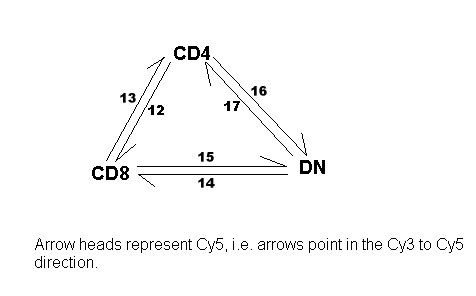
This experiment involved six cDNA microarrays in three dye-swap pairs, with each pair used to compare two DC types. The design is shown diagrammatically above. The targets file was as follows:
> targets SlideNumber FileName Cy3 Cy5 1 12 ml12med.spot CD4 CD8 2 13 ml13med.spot CD8 CD4 3 14 ml14med.spot DN CD8 4 15 ml15med.spot CD8 DN 5 16 ml16med.spot CD4 DN 6 17 ml17med.spot DN CD4
There are many valid choices for a design matrix for such an experiment and no single correct choice. We chose to setup the design matrix as follows:
> design <- cbind("CD8-CD4"=c(1,-1,1,-1,0,0),"DN-CD4"=c(0,0,-1,1,1,-1))
> rownames(design) <- removeExt(targets$FileName)
> design
CD8-CD4 DN-CD4
ml12med 1 0
ml13med -1 0
ml14med 1 -1
ml15med -1 1
ml16med 0 1
ml17med 0 -1
In this design matrix, the CD8 and DN populations have been compared back to the CD4 population. The coefficients estimated by the linear model will correspond to the log-ratios of CD8 vs CD4 (first column) and DN vs CD4 (second column). After appropriate normalization of the expression data, a linear model was fit using
> fit <- lmFit(MA, design, ndups=2)
The use of ndups is to specify that the arrays contained
duplicates of each gene, see Section 9.
The linear model can now be interrogated to answer any questions of interest. For this experiment it was of interest to make all pairwise comparisons between the three DC populations. This was accomplished using the contrast matrix
> contrast.matrix <- cbind("CD8-CD4"=c(1,0),"DN-CD4"=c(0,1),"CD8-DN"=c(1,-1))
> rownames(contrast.matrix) <- colnames(design)
> contrast.matrix
CD8-CD4 DN-CD4 CD8-DN
CD8-CD4 1 0 1
DN-CD4 0 1 -1
The contrast matrix can be used to expand the linear model fit and then to compute empirical Bayes statistics:
> fit2 <- constrast.fit(fit, contrast.matrix) > fit2 <- eBayes(fit2)
There is an enormous variety of possible experimental designs and it isn't possible to give prescriptive rules that will cover all possibilities. Here we consider a less standard design in which three mutant mice are to be compared with three wild type mice. The different mice are biological replicates. Eighteen two-color arrays were used with each mouse appearing on six different arrays. The arrays were arranged in dye-swap pairs although this does not affect the analysis. The contrast of interest is the mutant versus wild type comparison.
> targets
FileName Cy3 Cy5
1391 1391.spot wt1 mu1
1392 1392.spot mu1 wt1
1340 1340.spot wt2 mu1
1341 1341.spot mu1 wt2
1395 1395.spot wt3 mu1
1396 1396.spot mu1 wt3
1393 1393.spot wt1 mu2
1394 1394.spot mu2 wt1
1371 1371.spot wt2 mu2
1372 1372.spot mu2 wt2
1338 1338.spot wt3 mu2
1339 1339.spot mu2 wt3
1387 1387.spot wt1 mu3
1388 1388.spot mu3 wt1
1399 1399.spot wt2 mu3
1390 1390.spot mu3 wt2
1397 1397.spot wt3 mu3
1398 1398.spot mu3 wt3
There are several ways to analyse this data using fixed or random effects for the mice. Here we outline a direct approach in which a separate coefficient is fitted for each mouse, and then the contrast of interest is formed between the mice.
> design <- modelMatrix(targets, ref="wt1") > design <- cbind(Dye=1,design) > colnames(design) [1] "Dye" "mu1" "mu2" "mu3" "wt2" "wt3"
The above code treats the first wild-type mice as a baseline reference, so that columns of the design matrix represent the difference between each of the other mice and wt1. The design matrix also includes an intercept term which represents the dye effect of cy5 over cy3 for each gene. If you don't wish to allow for a dye effect, the second line of code can be omitted.
> fit <- lmFit(MA, design) > cont.matrix <- makeContrasts(muvswt=(mu1+mu2+mu3-wt2-wt3)/3, levels=design) > fit2 <- contrasts.fit(fit, cont.matrix) > fit2 <- eBayes(fit2)
The contrast defined by the function makeContrasts represents
the average difference between the mutant and wild-type mice, which is the
comparison of interest.
This general approach is applicable to many medium-sized studies involving biological replicates.
A number of summary statistics are computed by the eBayes()
function for each gene and each contrast. The M-value (M) is the
log2-fold change, or sometimes the log2-expression level, for that gene. The
A-value (A) is the the average expression level for that gene
across all the arrays and channels. The moderated t-statistic (t)
is the ratio of the M-value to its standard error. This has the same
interpretation as an ordinary t-statistic except that the standard errors have
been moderated across genes, effectively borrowing information from the ensemble
of genes to aid with inference about each individual gene. The ordinary
t-statistics are not usually required or recommended, but they can be recovered
by
> tstat.ord <- fit$coef / fit$stdev.unscaled / fit$sigma
after fitting a linear model. The ordinary t-statistic is on
fit$df.residual degrees of freedom while the moderated t-statistic is on
fit$df.residual+fit$df.prior degrees of freedom.
The p-value (p-value) is obtained from the moderated
t-statistic, usually after some form of adjustment for multiple testing. The
most popular form of adjustment is "fdr" which is Benjamini and Hochberg's
method to control the false discovery rate. The meaning of the adjusted p-value
is as follows. If you select all genes with p-value below a given value, say
0.05, as differentially expression, then the expected proportion of false
discoveries in the selected group should be less than that value, in this case
less than 5%.
The B-statistic (lods or B) is the log-odds
that that gene is differentially expressed. Suppose for example that B=1.5. The
odds of differential expression is exp(1.5)=4.48, i.e, about four and a half to
one. The probability that the gene is differentially expressed is
4.48/(1+4.48)=0.82, i.e., the probability is about 82% that this gene is
differentially expressed. A B-statistic of zero corresponds to a 50-50 chance
that the gene is differentially expressed. The B-statistic is automatically
adjusted for multiple testing by assuming that 1% of the genes, or some other
percentage specified by the user, are expected to be differentially expressed.
If there are no missing values in your data, then the moderated t and B
statistics will rank the genes in exactly the same order. Even you do have spot
weights or missing data, the p-values and B-statistics will usually provide a
very similar ranking of the genes.
Please keep in mind that the moderated t-statistic p-values and the B-statistic probabilities depend on various sorts of mathematical assumptions which are never exactly true for microarray data. The B-statistics also depend on a prior guess for the proportion of differentially expressed genes. Therefore they are intended to be taken as a guide rather than as a strict measure of the probability of differential expression. Of the three statistics, the moderated-t, the associated p-value and the B-statistics, we usually base our gene selections on the p-value. All three measures are closely related, but the moderated-t and its p-value do not require a prior guess for the number of differentially expressed genes.
The above mentioned statistics are computed for every contrast for each gene.
The eBayes() function computes one more useful statistic. The moderated F-statistic (F) combines
the t-statistics for all the contrasts into an overall test of significance for
that gene. The
moderated F-statistic tests whether any of the contrasts are non-zero for that
gene, i.e., whether that gene is differentially expressed on any contrast. The
moderated-F has numerator degrees of freedom equal to the number of contrasts
and denominator degrees of freedom the same as the moderated-t. Its p-value is
stored as fit$F.p.value. It is similar to the ordinary F-statistic
from analysis of variance except that the denominator mean squares are
moderated across genes.
In a complex experiment with many contrasts, it may be desirable to select
genes firstly on the basis of their moderated F-statistics, and subsequently to
decide which of the individual contrasts are significant for the selected genes.
This cuts down on the number of tests which need to be conducted and therefore
on the amount of adjustment for multiple testing. The
functions classifyTestsF() and decideTests() are
provided for this purpose.
In this section we consider a case study in which two RNA sources are compared directly on a set of replicate or dye-swap arrays. The case study includes reading in the data, data display and exploration, as well as normalization and differential expression analysis. The analysis of differential expression is analogous to a classical one-sample test of location for each gene.
In this example we assume that the data is provided as a GAL file called
fish.gal and raw SPOT output files and that these files are in the
current working directory.
Background. The experiment was carried out using zebrafish as a model organism to study the early development in vertebrates. Swirl is a point mutant in the BMP2 gene that affects the dorsal/ventral body axis. The main goal of the Swirl experiment is to identify genes with altered expression in the Swirl mutant compared to wild-type zebrafish.
The hybridizations. Two sets of dye-swap experiments were performed making a total of four replicate hybridizations. Each of the arrays compares RNA from swirl fish with RNA from normal ("wild type") fish. The experimenters have prepared a tab-delimited targets file called "SwirlSamples.txt" which describes the four hybridizations:
> targets <- readTargets("SwirlSample.txt")
> targets
SlideNumber FileName Cy3 Cy5 Date
1 81 swirl.1.spot swirl wild type 2001/9/20
2 82 swirl.2.spot wild type swirl 2001/9/20
3 93 swirl.3.spot swirl wild type 2001/11/8
4 94 swirl.4.spot wild type swirl 2001/11/8
We see that slide numbers 81, 82, 93 and 94 were used to make the arrays. On slides 81 and 93, swirl RNA was labelled with green (Cy3) dye and wild type RNA was labelled with red (Cy5) dye. On slides 82 and 94, the labelling was the other way around.
Each of the four hybridized arrays was scanned on an Axon scanner to produce
a TIFF image, which was then processed using the image analysis software SPOT.
The data from the arrays are stored in the four output files listed under
FileName. Now we read the intensity data into an RGList
object in R. The default for SPOT output is that Rmean and Gmean
are used as foreground
intensities and morphR and morphG are used as
background intensities:
> RG <- read.maimages(targets$FileName, source="spot")
Read swirl.1.spot
Read swirl.2.spot
Read swirl.3.spot
Read swirl.4.spot
> RG
An object of class "RGList"
$R
swirl.1 swirl.2 swirl.3 swirl.4
[1,] 19538.470 16138.720 2895.1600 14054.5400
[2,] 23619.820 17247.670 2976.6230 20112.2600
[3,] 21579.950 17317.150 2735.6190 12945.8500
[4,] 8905.143 6794.381 318.9524 524.0476
[5,] 8676.095 6043.542 780.6667 304.6190
8443 more rows ...
$G
swirl.1 swirl.2 swirl.3 swirl.4
[1,] 22028.260 19278.770 2727.5600 19930.6500
[2,] 25613.200 21438.960 2787.0330 25426.5800
[3,] 22652.390 20386.470 2419.8810 16225.9500
[4,] 8929.286 6677.619 383.2381 786.9048
[5,] 8746.476 6576.292 901.0000 468.0476
8443 more rows ...
$Rb
swirl.1 swirl.2 swirl.3 swirl.4
[1,] 174 136 82 48
[2,] 174 133 82 48
[3,] 174 133 76 48
[4,] 163 105 61 48
[5,] 140 105 61 49
8443 more rows ...
$Gb
swirl.1 swirl.2 swirl.3 swirl.4
[1,] 182 175 86 97
[2,] 171 183 86 85
[3,] 153 183 86 85
[4,] 153 142 71 87
[5,] 153 142 71 87
8443 more rows ...
The arrays. The microarrays used in this experiment were printed with 8448 probes (spots), including 768 control spots. The array printer uses a print head with a 4x4 arrangement of print-tips and so the microarrays are partitioned into a 4x4 grid of tip groups. Each grid consists of 22x24 spots that were printed with a single print-tip. The gene name associated with each spot is recorded in a GenePix array list (GAL) file:
> RG$genes <- readGAL("fish.gal")
> RG$genes[1:30,]
Block Row Column ID Name
1 1 1 1 control geno1
2 1 1 2 control geno2
3 1 1 3 control geno3
4 1 1 4 control 3XSSC
5 1 1 5 control 3XSSC
6 1 1 6 control EST1
7 1 1 7 control geno1
8 1 1 8 control geno2
9 1 1 9 control geno3
10 1 1 10 control 3XSSC
11 1 1 11 control 3XSSC
12 1 1 12 control 3XSSC
13 1 1 13 control EST2
14 1 1 14 control EST3
15 1 1 15 control EST4
16 1 1 16 control 3XSSC
17 1 1 17 control Actin
18 1 1 18 control Actin
19 1 1 19 control 3XSSC
20 1 1 20 control 3XSSC
21 1 1 21 control 3XSSC
22 1 1 22 control 3XSSC
23 1 1 23 control Actin
24 1 1 24 control Actin
25 1 2 1 control ath1
26 1 2 2 control Cad-1
27 1 2 3 control DeltaB
28 1 2 4 control Dlx4
29 1 2 5 control ephrinA4
30 1 2 6 control FGF8
The 4x4x22x24 print layout also needs to be set. The easiest way to do this is to infer it from the GAL file:
> RG$printer <- getLayout(RG$genes)
Image plots. It is interesting to look at the variation of background values over the array. Consider image plots of the red and green background for the first array:
> imageplot(log2(RG$Rb[,1]), RG$printer, low="white", high="red") > imageplot(log2(RG$Gb[,1]), RG$printer, low="white", high="green")
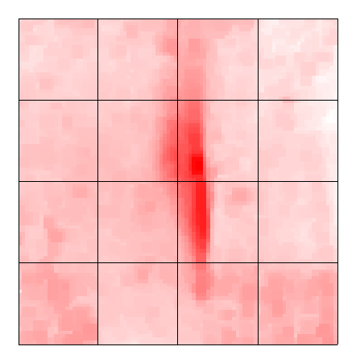
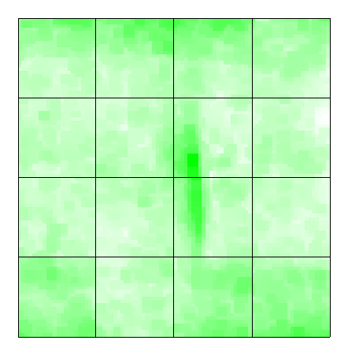
Image plot of the un-normalized log-ratios or M-values for the first array:
> MA <- normalizeWithinArrays(RG, method="none") > imageplot(MA$M[,1], RG$printer, zlim=c(-3,3))
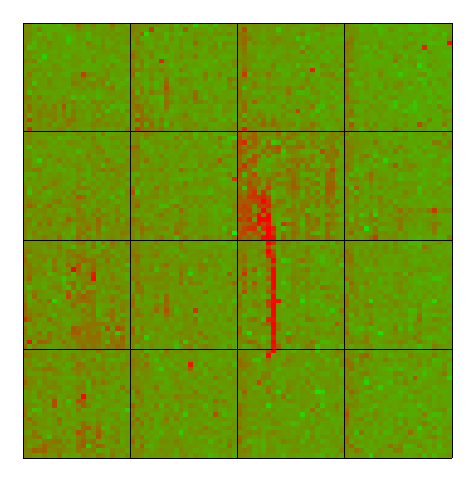
The imageplot function lies the slide on its side, so the first print-tip group is bottom left
in this plot. We can see a red
streak across the middle two grids of the 3rd row caused by a scratch or dust on
the array. Spots which are affected by
this artefact will have suspect M-values. The streak also shows up as darker
regions in the background plots.
MA-plots. An MA-plot plots the log-ratio of R vs G against the overall intensity of each spot. The log-ratio is represented by the M-value, M = log2(R)-log2(G), and the overall intensity by the A-value, A = (log2(R)+log2(G))/2. Here is the MA-plot of the un-normalized values for the first array:
> plotMA(MA)
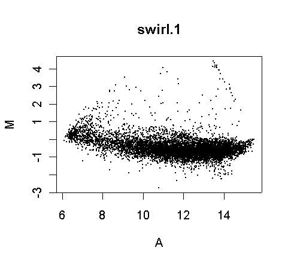
The red streak seen on the image plot can be seen as a line of spots in the upper right of this plot. Now we plot the individual MA-plots for each of the print-tip groups on this array, together with the loess curves which will be used for normalization:
> plotPrintTipLoess(MA)
Normalization. Print-tip loess normalization:
> MA <- normalizeWithinArrays(RG) > plotPrintTipLoess(MA)
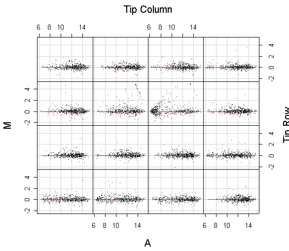
We have normalized the M-values with each array. A further question is whether normalization is required between the arrays. The following plot shows overall boxplots of the M-values for the four arrays.
> boxplot(MA$M~col(MA$M),names=colnames(MA$M))
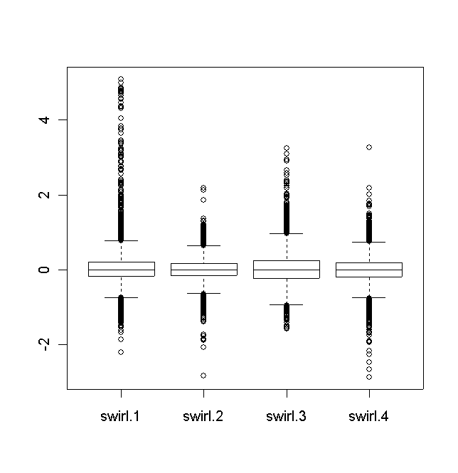
There is some evidence that the different arrays have different spreads of M-values, so we will scale normalize between the arrays.
> MA <- normalizeBetweenArrays(MA) > boxplot(MA$M~col(MA$M),names=colnames(MA$M))
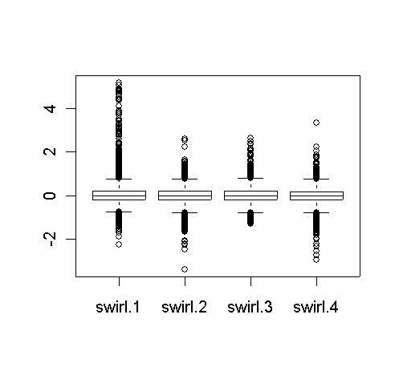
Linear model. Now estimate the average M-value for each gene. We do this by fitting a simple linear model for each gene. The negative numbers in the design matrix indicate the dye-swaps.
> design <- c(-1,1,-1,1)
> fit <- lmFit(MA,design)
> fit
An object of class "MArrayLM"
$coefficients
[1] -0.3943421 -0.3656843 -0.3912506 -0.2505729 -0.3432590
8443 more elements ...
$stdev.unscaled
[1] 0.5 0.5 0.5 0.5 0.5
8443 more elements ...
$sigma
[1] 0.3805154 0.4047829 0.4672451 0.3206071 0.2838043
8443 more elements ...
$df.residual
[1] 3 3 3 3 3
8443 more elements ...
$method
[1] "ls"
$design
[,1]
[1,] -1
[2,] 1
[3,] -1
[4,] 1
$genes
Block Row Column ID Name
1 1 1 1 control geno1
2 1 1 2 control geno2
3 1 1 3 control geno3
4 1 1 4 control 3XSSC
5 1 1 5 control 3XSSC
8443 more rows ...
$Amean
[1] 13.46481 13.67631 13.42665 10.77730 10.88446
8443 more elements ...
In the above fit object, coefficients is the average M-value for
each gene and sigma is the sample standard deviations for each
gene. Ordinary t-statistics for comparing mutant to wt could be computed by
> ordinary.t <- fit$coef / fit$stdev.unscaled / fit$sigma
We prefer though to use empirical Bayes moderated t-statistics which are computed below.
Now create an MA-plot of the average M and A-values for each gene.
> M <- fit$coef > A <- fit$Amean > plot(A,M,pch=16,cex=0.2) > abline(0,0,col="blue")
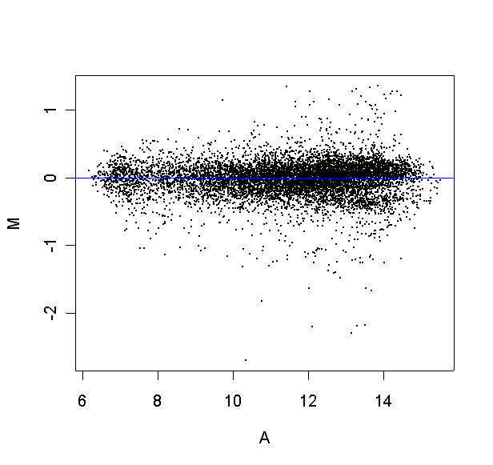
Empirical Bayes analysis. We will now go on and compute empirical Bayes statistics for differential expression. The moderated t-statistics use sample standard deviations which have been shrunk towards a pooled standard deviation value.
> fit <- eBayes(fit) > qqt(fit$t,df=fit$df.prior+fit$df.residual,pch=16,cex=0.2) > abline(0,1)
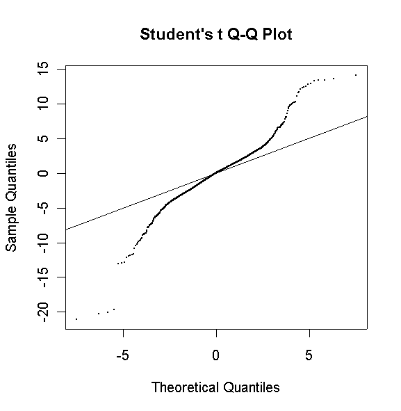
Visually there seems to be plenty of genes which are differentially
expressed. We will obtain a summary table of some key statistics for the top genes.
> options(digits=3)
> topTable(fit,number=30,adjust="fdr")
Block Row Column ID Name M A t P.Value B
3721 8 2 1 control BMP2 -2.21 12.1 -21.1 0.000357 7.96
1609 4 2 1 control BMP2 -2.30 13.1 -20.3 0.000357 7.78
3723 8 2 3 control Dlx3 -2.18 13.3 -20.0 0.000357 7.71
1611 4 2 3 control Dlx3 -2.18 13.5 -19.6 0.000357 7.62
8295 16 16 15 fb94h06 20-L12 1.27 12.0 14.1 0.002067 5.78
7036 14 8 4 fb40h07 7-D14 1.35 13.8 13.5 0.002067 5.54
515 1 22 11 fc22a09 27-E17 1.27 13.2 13.4 0.002067 5.48
5075 10 14 11 fb85f09 18-G18 1.28 14.4 13.4 0.002067 5.48
7307 14 19 11 fc10h09 24-H18 1.20 13.4 13.2 0.002067 5.40
319 1 14 7 fb85a01 18-E1 -1.29 12.5 -13.1 0.002067 5.32
2961 6 14 9 fb85d05 18-F10 -2.69 10.3 -13.0 0.002067 5.29
4032 8 14 24 fb87d12 18-N24 1.27 14.2 12.8 0.002067 5.22
6903 14 2 15 control Vox -1.26 13.4 -12.8 0.002067 5.20
4546 9 14 10 fb85e07 18-G13 1.23 14.2 12.8 0.002067 5.18
683 2 7 11 fb37b09 6-E18 1.31 13.3 12.4 0.002182 5.02
1697 4 5 17 fb26b10 3-I20 1.09 13.3 12.4 0.002182 4.97
7491 15 5 3 fb24g06 3-D11 1.33 13.6 12.3 0.002182 4.96
4188 8 21 12 fc18d12 26-F24 -1.25 12.1 -12.2 0.002209 4.89
4380 9 7 12 fb37e11 6-G21 1.23 14.0 12.0 0.002216 4.80
3726 8 2 6 control fli-1 -1.32 10.3 -11.9 0.002216 4.76
2679 6 2 15 control Vox -1.25 13.4 -11.9 0.002216 4.71
5931 12 6 3 fb32f06 5-C12 -1.10 13.0 -11.7 0.002216 4.63
7602 15 9 18 fb50g12 9-L23 1.16 14.0 11.7 0.002216 4.63
2151 5 2 15 control vent -1.40 12.7 -11.7 0.002216 4.62
3790 8 4 22 fb23d08 2-N16 1.16 12.5 11.6 0.002221 4.58
7542 15 7 6 fb36g12 6-D23 1.12 13.5 11.0 0.003000 4.27
4263 9 2 15 control vent -1.41 12.7 -10.8 0.003326 4.13
6375 13 2 15 control vent -1.37 12.5 -10.5 0.004026 3.91
1146 3 4 18 fb22a12 2-I23 1.05 13.7 10.2 0.004242 3.76
157 1 7 13 fb38a01 6-I1 -1.82 10.8 -10.2 0.004242 3.75
The top gene is BMP2 which is significantly down-regulated in the Swirl zebrafish, as it should be because the Swirl fish are mutant in this gene. Other positive controls also appear in the top 30 genes in terms.
In the table, t is the empirical Bayes moderated t-statistic, the corresponding P-values have been adjusted to control the false discovery rate and B is the empirical Bayes log odds of differential expression.
> ord <- order(fit$lods,decreasing=TRUE) > top30 <- ord[1:30] > plot(A,M,pch=16,cex=0.2) > text(A[top30],M[top30],labels=MA$genes[top30,"Name"],cex=0.8,col="blue")
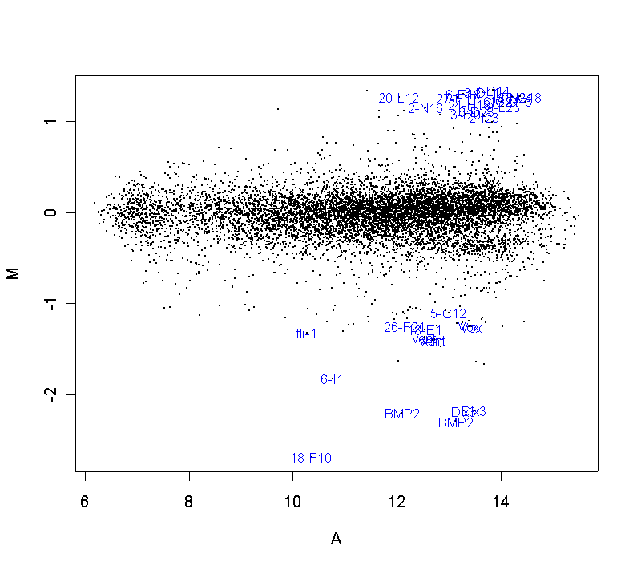
A warning on distributional assumptions. Beware that the p-values given here are intended to be a guide only. In the microarray context it is difficult to verify distributional assumptions, such as normality of the M-values, that the p-values are based on. This is a limitation of all model-based methods for micoarray data. Also beware that the Benjamini and Hochberg method used to control the false discovery rate does assume that the t-statistics for different probes are independent, whereas the t-statistics for different probes are actually somewhat dependent as a result of being based on observations made on the same set of arrays. Rainer et al (2003) have argued that the Benjamini and Hochberg approach is actually quite stable with respect to dependence between the probes, but this remains a somewhat controversial point.
In this section we consider a case study where two RNA sources are compared through a common reference RNA. The analysis of the log-ratios involves a two-sample comparison of means for each gene.
In this example we assume that the data is available as an RGList in the
data file ApoAI.RData.
Background. The data is from a study of lipid metabolism by Callow et al (2000). The apolipoprotein AI (ApoAI) gene is known to play a pivotal role in high density lipoprotein (HDL) metabolism. Mice which have the ApoAI gene knocked out have very low HDL cholesterol levels. The purpose of this experiment is to determine how ApoAI deficiency affects the action of other genes in the liver, with the idea that this will help determine the molecular pathways through which ApoAI operates.
Hybridizations. The experiment compared 8 ApoAI knockout mice with 8 normal C57BL/6 ("black six") mice, the control mice. For each of these 16 mice, target mRNA was obtained from liver tissue and labelled using a Cy5 dye. The RNA from each mouse was hybridized to a separate microarray. Common reference RNA was labelled with Cy3 dye and used for all the arrays. The reference RNA was obtained by pooling RNA extracted from the 8 control mice.
| Number of arrays | Red | Green |
| 8 | Normal "black six" mice | Pooled reference |
| 8 | ApoAI knockout | Pooled reference |
This is an example of a single comparison experiment using a common reference. The fact that the comparison is made by way of a common reference rather than directly as for the swirl experiment makes this, for each gene, a two-sample rather than a single-sample setup.
> load("ApoAI.RData")
> objects()
[1] "RG"
> names(RG)
[1] "R" "G" "Rb" "Gb" "printer" "genes" "targets"
> RG$targets
FileName Cy3 Cy5
c1 a1koc1.spot Pool C57BL/6
c2 a1koc2.spot Pool C57BL/6
c3 a1koc3.spot Pool C57BL/6
c4 a1koc4.spot Pool C57BL/6
c5 a1koc5.spot Pool C57BL/6
c6 a1koc6.spot Pool C57BL/6
c7 a1koc7.spot Pool C57BL/6
c8 a1koc8.spot Pool C57BL/6
k1 a1kok1.spot Pool ApoAI-/-
k2 a1kok2.spot Pool ApoAI-/-
k3 a1kok3.spot Pool ApoAI-/-
k4 a1kok4.spot Pool ApoAI-/-
k5 a1kok5.spot Pool ApoAI-/-
k6 a1kok6.spot Pool ApoAI-/-
k7 a1kok7.spot Pool ApoAI-/-
k8 a1kok8.spot Pool ApoAI-/-
> MA <- normalizeWithinArrays(RG)
> cols <- MA$targets$Cy5
> cols[cols=="C57BL/6"] <- "blue"
> cols[cols=="ApoAI-/-"] <- "yellow"
> boxplot(MA$M~col(MA$M),names=rownames(MA$targets),col=cols,xlab="Mouse",ylab="M-values")
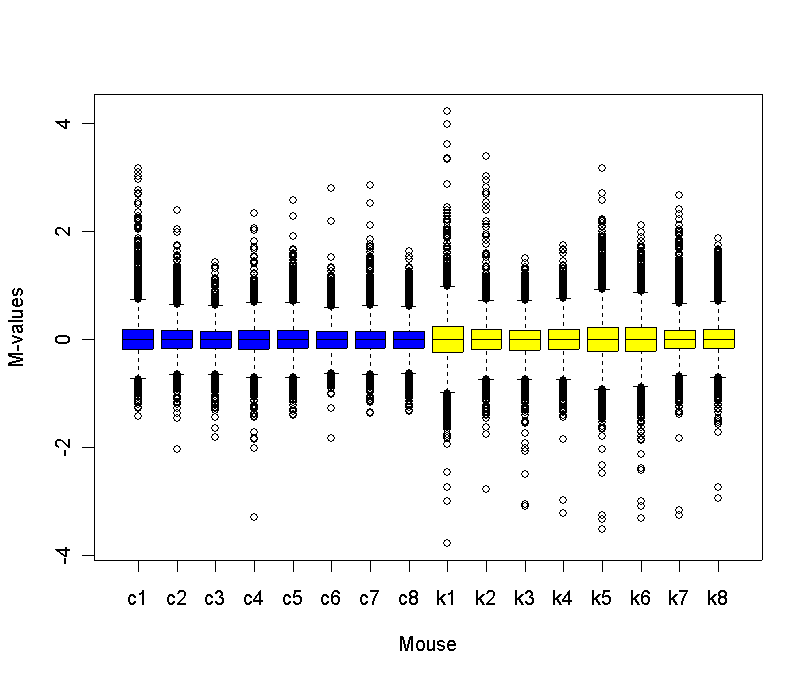
Since the common reference here is a pool of the control mice, we expect to see more differences from the pool for the knock-out mice than for the control mice. In terms of the above plot, this should translate into a wider range of M-values for the knock-out mice arrays than for the control arrays, and we do see this. Since the different arrays are not expected to have the same range of M-values, between-array scale normalization of the M-values is not appropriate here.
Now we can go on to estimate the fold change between the two groups. In this case the design matrix has two columns. The coefficient for the second column estimates the parameter of interest, the log-ratio between knockout and control mice.
> design <- cbind("Control-Ref"=1,"KO-Control"=MA$targets$Cy5=="ApoAI-/-")
> design
Control-Ref KO-Control
[1,] 1 0
[2,] 1 0
[3,] 1 0
[4,] 1 0
[5,] 1 0
[6,] 1 0
[7,] 1 0
[8,] 1 0
[9,] 1 1
[10,] 1 1
[11,] 1 1
[12,] 1 1
[13,] 1 1
[14,] 1 1
[15,] 1 1
[16,] 1 1
> fit <- lmFit(MA, design)
> fit$coef[1:5,]
Control-Ref KO-Control
[1,] -0.6595 0.6393
[2,] 0.2294 0.6552
[3,] -0.2518 0.3342
[4,] -0.0517 0.0405
[5,] -0.2501 0.2230
> fit <- eBayes(fit)
> options(digits=3)
> topTable(fit,coef=2,number=15,adjust="fdr")
GridROW GridCOL ROW COL NAME TYPE M t P.Value B
2149 2 2 8 7 ApoAI,lipid-Img cDNA -3.166 -23.98 3.05e-11 14.927
540 1 2 7 15 EST,HighlysimilartoA cDNA -3.049 -12.96 5.02e-07 10.813
5356 4 2 9 1 CATECHOLO-METHYLTRAN cDNA -1.848 -12.44 6.51e-07 10.448
4139 3 3 8 2 EST,WeaklysimilartoC cDNA -1.027 -11.76 1.21e-06 9.929
1739 2 1 7 17 ApoCIII,lipid-Img cDNA -0.933 -9.84 1.56e-05 8.192
2537 2 3 7 17 ESTs,Highlysimilarto cDNA -1.010 -9.02 4.22e-05 7.305
1496 1 4 15 5 est cDNA -0.977 -9.00 4.22e-05 7.290
4941 4 1 8 6 similartoyeaststerol cDNA -0.955 -7.44 5.62e-04 5.311
947 1 3 8 2 EST,WeaklysimilartoF cDNA -0.571 -4.55 1.77e-01 0.563
5604 4 3 1 18 cDNA -0.366 -3.96 5.29e-01 -0.553
4140 3 3 8 3 APXL2,5q-Img cDNA -0.420 -3.93 5.29e-01 -0.619
6073 4 4 5 4 estrogenrec cDNA 0.421 3.91 5.29e-01 -0.652
1337 1 4 7 14 psoriasis-associated cDNA -0.838 -3.89 5.29e-01 -0.687
954 1 3 8 9 Caspase7,heart-Img cDNA -0.302 -3.86 5.30e-01 -0.757
563 1 2 8 17 FATTYACID-BINDINGPRO cDNA -0.637 -3.81 5.30e-01 -0.839
Notice that the top gene is ApoAI itself which is heavily down-regulated. Theoretically the M-value should be minus infinity for ApoAI because it is the knockout gene. Several of the other genes are closely related. The top eight genes here were confirmed by independent assay subsequent to the microarray experiment to be differentially expressed in the knockout versus the control line.
> plot(fit$coef[,2],fit$lods[,2],pch=16,cex=0.2,xlab="Log Fold Change",ylab="Log Odds",main="KO vs Control") > ord <- order(fit$lods[,2],decreasing=TRUE) > top8 <- ord[1:8] > text(fit$coef[top8,2],fit$lods[top8,2],labels=substring(genelist[top8,"NAME"],1,5),cex=0.8,col="blue")
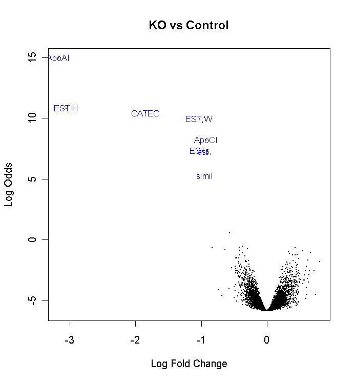
The data are from experiments reported in Hung et al (2002) and are available from the www site
http://visitor.ics.uci.edu/genex/cybert/tutorial/index.html
The data is also available from the ecoliLeucine data package available from the Bioconductor www site under "Experimental Data". Hung et al (2002) state that "The purpose of the work presented here is to identify the network of genes that are differentially regulated by the global E. coli regulatory protein, leucine-responsive regulatory protein (Lrp), during steady state growth in a glucose supplemented minimal salts medium. Lrp is a DNA-binding protein tath has been reported to affect the expression of approximately 55 genes." Gene expression in two E. coli bacteria strains, labelled lrp+ and lrp-, were compared using eight Affymetrix ecoli chips, four chips each for lrp+ and lrp-.
The following code assumes that the data files for the eight chips are in your current working directory. The E. coli CDF is also assumed to be available, either the Ecoli CDF data package from Bioconductor is installed or the file Ecoli.CDF is in your current working directory.
> dir() [1] "Ecoli.CDF" "nolrp_1.CEL" "nolrp_2.CEL" [4] "nolrp_3.CEL" "nolrp_4.CEL" "wt_1.CEL" [7] "wt_2.CEL" "wt_3.CEL" "wt_4.CEL"
The data is read and normalized using the Bioconductor affy package.
> library(affy)
Welcome to Bioconductor
Vignettes contain introductory material. To view,
simply type: openVignette()
For details on reading vignettes, see
the openVignette help page.
> Data <- ReadAffy()
> eset <- rma(Data)
Background correcting
Normalizing
Calculating Expression
> pData(eset)
sample
nolrp_1.CEL 1
nolrp_2.CEL 2
nolrp_3.CEL 3
nolrp_4.CEL 4
wt_1.CEL 5
wt_2.CEL 6
wt_3.CEL 7
wt_4.CEL 8
Now we consider differential expression between the lrp+ and lrp- strains.
> strain <- c("lrp-","lrp-","lrp-","lrp-","lrp+","lrp+","lrp+","lrp+")
> design <- model.matrix(~factor(strain))
> colnames(design) <- c("lrp-","lrp+vs-")
> design
lrp- lrp+vs-
1 1 0
2 1 0
3 1 0
4 1 0
5 1 1
6 1 1
7 1 1
8 1 1
attr(,"assign")
[1] 0 1
attr(,"contrasts")
attr(,"contrasts")$"factor(strain)"
[1] "contr.treatment"
The first coefficient measures log2-expression of each gene in the lrp- strain. The second coefficient measures the log2-fold change of lrp+ over lrp-, i.e., the log-fold change induced by lrp.
> fit <- lmFit(eset, design)
> fit <- eBayes(fit)
> options(digits=2)
> topTable(fit, coef=2, n=40, adjust="fdr")
ProbeSetID M A t P.Value B
4282 IG_821_1300838_1300922_fwd_st -3.32 12.4 -23.1 5.3e-05 8.017
5365 serA_b2913_st 2.78 12.2 15.8 6.0e-04 6.603
1389 gltD_b3213_st 3.03 10.9 13.3 1.6e-03 5.779
4625 lrp_b0889_st 2.30 9.3 11.4 4.0e-03 4.911
1388 gltB_b3212_st 3.24 10.1 11.1 4.0e-03 4.766
4609 livK_b3458_st 2.35 9.9 10.8 4.0e-03 4.593
4901 oppB_b1244_st -2.91 10.7 -10.6 4.0e-03 4.504
4903 oppD_b1246_st -1.94 10.4 -10.5 4.0e-03 4.434
5413 sodA_b3908_st 1.50 10.3 9.7 6.5e-03 3.958
4900 oppA_b1243_st -2.98 13.0 -9.1 9.2e-03 3.601
5217 rmf_b0953_st -2.71 13.6 -9.0 9.3e-03 3.474
7300 ytfK_b4217_st -2.64 11.1 -8.9 9.3e-03 3.437
5007 pntA_b1603_st 1.58 10.1 8.3 1.4e-02 3.019
4281 IG_820_1298469_1299205_fwd_st -2.45 10.7 -8.1 1.6e-02 2.843
4491 ilvI_b0077_st 0.95 10.0 7.4 2.9e-02 2.226
5448 stpA_b2669_st 1.79 10.0 7.4 2.9e-02 2.210
611 b2343_st -2.12 10.8 -7.1 3.4e-02 2.028
5930 ybfA_b0699_st -0.91 10.5 -7.0 3.5e-02 1.932
1435 grxB_b1064_st -0.91 9.8 -6.9 3.8e-02 1.810
4634 lysU_b4129_st -3.30 9.3 -6.9 3.9e-02 1.758
4829 ndk_b2518_st 1.07 11.1 6.7 4.3e-02 1.616
2309 IG_1643_2642304_2642452_rev_st 0.83 9.6 6.7 4.3e-02 1.570
4902 oppC_b1245_st -2.15 10.7 -6.3 5.9e-02 1.238
4490 ilvH_b0078_st 1.11 9.9 5.9 8.8e-02 0.820
1178 fimA_b4314_st 3.40 11.7 5.9 8.8e-02 0.743
6224 ydgR_b1634_st -2.35 9.8 -5.8 8.8e-02 0.722
4904 oppF_b1247_st -1.46 9.9 -5.8 8.8e-02 0.720
792 b3914_st -0.77 9.5 -5.7 1.0e-01 0.565
5008 pntB_b1602_st 1.47 12.8 5.6 1.0e-01 0.496
4610 livM_b3456_st 1.04 8.5 5.5 1.1e-01 0.376
5097 ptsG_b1101_st 1.16 12.2 5.5 1.1e-01 0.352
4886 nupC_b2393_st 0.79 9.6 5.5 1.1e-01 0.333
4898 ompT_b0565_st 2.67 10.5 5.4 1.2e-01 0.218
5482 tdh_b3616_st -1.61 10.5 -5.3 1.3e-01 0.092
1927 IG_13_14080_14167_fwd_st -0.55 8.4 -5.3 1.3e-01 0.076
6320 yeeF_b2014_st 0.88 9.9 5.3 1.3e-01 0.065
196 atpG_b3733_st 0.60 12.5 5.2 1.4e-01 -0.033
954 cydB_b0734_st -0.76 11.0 -5.0 1.8e-01 -0.272
1186 fimI_b4315_st 1.15 8.3 5.0 1.8e-01 -0.298
4013 IG_58_107475_107629_fwd_st -0.49 10.4 -4.9 2.0e-01 -0.407
The column M gives the log2-fold change while the column A gives the average log2-intensity for the probe-set. Positive M-values mean that the gene is up-regulated in lrp+, negative values mean that it is repressed.
It is interesting to compare this table with Tables III and IV in Hung et al (2002). Note that the top-ranked gene is an intergenic region (IG) tRNA gene. The knock-out gene itself is in position four. Many of the genes in the above table, including the ser, glt, liv, opp, lys, ilv and fim families, are known targets of lrp.
This data is from the estrogen package on Bioconductor. A subset of the data is also analysed in the factDesign package vignette. To repeat this case study you will need to have the R packages affy, estrogen and hgu95av2cdf installed.
The data gives results from a 2x2 factorial experiment on MCF7 breast cancer cells using Affymetrix HGU95av2 arrays. The factors in this experiment were estrogen (present or absent) and length of exposure (10 or 48 hours). The aim of the study is the identify genes which respond to estrogen and to classify these into early and late responders. Genes which respond early are putative direct-target genes while those which respond late are probably downstream targets in the molecular pathway.
First load the required packages:
> library(limma)
> library(affy)
Welcome to Bioconductor
Vignettes contain introductory material. To view,
simply type: openVignette()
For details on reading vignettes, see
the openVignette help page.
> library(hgu95av2cdf)
The data files are contained in the 'extdata' directory of the estrogen package:
> datadir <- file.path(.find.package("estrogen"),"extdata")
> dir(datadir)
[1] "00Index" "bad.cel" "high10-1.cel" "high10-2.cel" "high48-1.cel"
[6] "high48-2.cel" "low10-1.cel" "low10-2.cel" "low48-1.cel" "low48-2.cel"
[11] "phenoData.txt"
The target file is called phenoData.txt. We see there are two arrays for each experimental condition, giving a total of 8 arrays.
> targets <- readTargets("phenoData.txt",path=datadir,sep="",row.names="filename")
> targets
filename estrogen time.h
low10-1 low10-1.cel absent 10
low10-2 low10-2.cel absent 10
high10-1 high10-1.cel present 10
high10-2 high10-2.cel present 10
low48-1 low48-1.cel absent 48
low48-2 low48-2.cel absent 48
high48-1 high48-1.cel present 48
high48-2 high48-2.cel present 48
Now read the cel files into an AffyBatch object and normalize using the
rma() function from the affy package:
> ab <- ReadAffy(filenames=file.path(datadir,targets$filename)) > eset <- rma(ab) Background correcting Normalizing Calculating Expression
There are many ways to construct a design matrix for this experiment. Given that we are interested in the early and late estrogen responders, we can choose a parametrization which includes these two contrasts.
> treatments <- factor(c(1,1,2,2,3,3,4,4),labels=c("e10","E10","e48","E48"))
> contrasts(treatments) <- cbind(Time=c(0,0,1,1),E10=c(0,1,0,0),E48=c(0,0,0,1))
> design <- model.matrix(~treatments)
> colnames(design) <- c("Intercept","Time","E10","E48")
The second coefficient picks up the effect of time in the absence of estrogen. The third and fourth coefficients estimate the log2-fold change for estrogen at 10 hours and 48 hours respectively.
> fit <- lmFit(eset,design)
We are only interested in the estrogen effects, so we choose a contrast matrix which picks these two coefficients out:
> cont.matrix <- cbind(E10=c(0,0,1,0),E48=c(0,0,0,1)) > fit2 <- contrasts.fit(fit, cont.matrix) > fit2 <- eBayes(fit2)
We can examine which genes respond to estrogen at either time using the
moderated F-statistics on 2 degrees of freedom. The moderated F p-value is
stored in the component fit2$F.p.value. What p-value cutoff should be used? One guide is to examine
the control and spike-in probe-clusters which theoretically should not be differentially expressed. We find that
the smallest p-value amongst these is about 0.00014. So a cutoff p-value of
0.0001, say, would be below any of these.
> i <- grep("AFFX",geneNames(eset))
> summary(fit2$F.p.value[i])
Min. 1st Qu. Median Mean 3rd Qu. Max.
0.0001391 0.1727000 0.3562000 0.4206000 0.6825000 0.9925000
Now we consider those genes with moderated F-statistics with p-values below 0.0001, and classify these according to whether they are significantly up or down regulated at the early or late times:
> results <- classifyTestsF(fit2, p.value=0.0001)
> table(E10=results[,1],E48=results[,2])
E48
E10 -1 0 1
-1 29 11 0
0 47 12370 52
1 0 29 87
> vennDiagram(results,include="up")
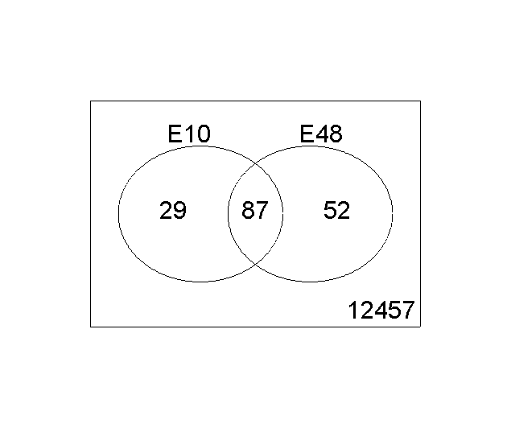
> vennDiagram(results,include="down")
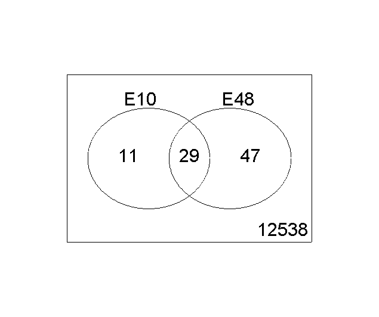
We see that 87 genes were up regulated at both 10 and 48 hours, 29 only at 10 hours and 52 only at 48 hours.. Also, 29 genes were down-regulated throughout, 11 only at 10 hours and 47 only at 48 hours. No genes were up at one time and down at the other.
topTable gives a detailed look at individual genes. The leading
genes are clearly significant, even using the default p-value adjustment method,
which is the highly conservative Holm's method.
> options(digits=3)
> topTable(fit2,coef="E10",n=20)
ID M A t P.Value B
9735 39642_at 2.94 7.88 23.7 5.99e-05 9.97
12472 910_at 3.11 9.66 23.6 6.26e-05 9.94
1814 31798_at 2.80 12.12 16.4 1.29e-03 7.98
11509 41400_at 2.38 10.04 16.2 1.41e-03 7.92
10214 40117_at 2.56 9.68 15.7 1.86e-03 7.70
953 1854_at 2.51 8.53 15.2 2.46e-03 7.49
9848 39755_at 1.68 12.13 15.1 2.59e-03 7.45
922 1824_s_at 1.91 9.24 14.9 2.86e-03 7.37
140 1126_s_at 1.78 6.88 13.8 5.20e-03 6.89
580 1536_at 2.66 5.94 13.3 7.30e-03 6.61
12542 981_at 1.82 7.78 13.1 8.14e-03 6.52
3283 33252_at 1.74 8.00 12.6 1.12e-02 6.25
546 1505_at 2.40 8.76 12.5 1.20e-02 6.19
4405 34363_at -1.75 5.55 -12.2 1.44e-02 6.03
985 1884_s_at 2.80 9.03 12.1 1.59e-02 5.95
6194 36134_at 2.49 8.28 11.8 1.90e-02 5.79
7557 37485_at 1.61 6.67 11.4 2.50e-02 5.55
1244 239_at 1.57 11.25 10.4 5.14e-02 4.90
8195 38116_at 2.32 9.51 10.4 5.16e-02 4.90
10634 40533_at 1.26 8.47 10.4 5.31e-02 4.87
> topTable(fit2,coef="E48",n=20)
ID M A t P.Value B
12472 910_at 3.86 9.66 29.2 1.04e-05 11.61
1814 31798_at 3.60 12.12 21.1 1.62e-04 9.89
953 1854_at 3.34 8.53 20.2 2.29e-04 9.64
8195 38116_at 3.76 9.51 16.9 1.02e-03 8.48
8143 38065_at 2.99 9.10 16.2 1.42e-03 8.21
9848 39755_at 1.77 12.13 15.8 1.72e-03 8.05
642 1592_at 2.30 8.31 15.8 1.76e-03 8.03
11509 41400_at 2.24 10.04 15.3 2.29e-03 7.81
3766 33730_at -2.04 8.57 -15.1 2.48e-03 7.74
732 1651_at 2.97 10.50 14.8 3.02e-03 7.57
8495 38414_at 2.02 9.46 14.6 3.36e-03 7.48
1049 1943_at 2.19 7.60 14.0 4.69e-03 7.18
10214 40117_at 2.28 9.68 14.0 4.79e-03 7.16
10634 40533_at 1.64 8.47 13.5 6.24e-03 6.93
9735 39642_at 1.61 7.88 13.0 8.46e-03 6.65
4898 34851_at 1.96 9.96 12.8 9.47e-03 6.55
922 1824_s_at 1.64 9.24 12.8 1.00e-02 6.50
6053 35995_at 2.76 8.87 12.7 1.05e-02 6.46
12455 893_at 1.54 10.95 12.7 1.06e-02 6.45
10175 40079_at -2.41 8.23 -12.6 1.09e-02 6.42
This case study considers a more involved analysis in which the sources of
RNA have a factorial structure. In this example we assume that data is available as an
RGList.
Background. This is a case study examining the development of certain neurons in wild-type and weaver mutant mice from Diaz et al (2002). The weaver mutant affects cerebellar granule neurons, the most numerous cell-type in the central nervous system. Weaver mutant mice are characterized by a weaving gait. Granule cells are generated in the first postnatal week in the external granule layer of the cerebellum. In normal mice, the terminally differentiated granule cells migrate to the internal granule layer but in mutant mice the cells die before doing so, meaning that the mutant mice have strongly reduced numbers of cells in the internal granule layer. The expression level of any gene which is specific to mature granule cells, or is expressed in response to granule cell derived signals, is greatly reduced in the mutant mice.
Tissue dissection and RNA preparation. At each time point (P11 = 11 days postnatal and P21 = 21 days postnatal) cerebella were isolated from two wild-type and two mutant littermates and pooled for RNA isolation. RNA was then divided into aliquots and labelled before hybridizing to the arrays. (This means that different hybridizations are biologically related through using RNA from the same mice, although we will ignore this here. See Yang and Speed (2002) for a detailed discussion of this issue in the context of this experiment.)
Hybridizations. We have just four arrays each comparing two out of the four treatment combinations of time (11 days or 21 days) by genotype (wild-type or mutant). This has the structure of a 2x2 factorial experiment.
> objects() [1] "designIA" "designMt" "gal" "layout" "RG" "Targets" > Targets FileName Name Cy5 Cy3 1 cb.1.spot P11WT.P11MT P11WT P11MT 2 cb.2.spot P11MT.P21MT P11MT P21MT 3 cb.3.spot P21MT.P21WT P21MT P21WT 4 cb.4.spot P21WT.P11WT P21WT P11WT > MA <- normalizeWithinArrays(RG,layout) > boxplot(MA$M~col(MA$M),names=Targets$Name)
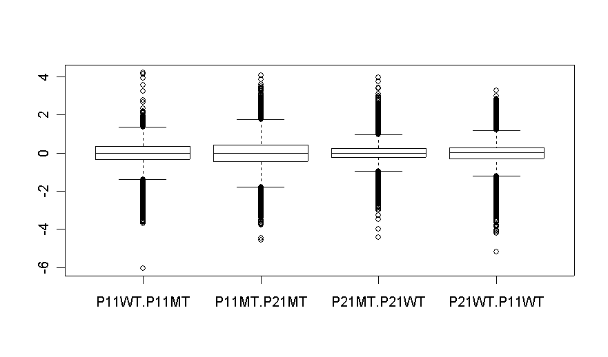
First we consider a classical interaction parametrization.
> designIA
TimeWt Mutant11 I/A
P11WT.P11MT 0 -1 0
P11MT.P21MT -1 0 -1
P21MT.P21WT 0 1 1
P21WT.P11WT 1 0 0
TimeWt is late vs early time for the wild-type mice. Mutant11 is mutant vs wild-type at the early time. The third column estimates the interaction between time and genotype.
> fitIA <- lmFit(MA,designIA)
> ebIA <- ebayes(fitIA)
> options(digits=3)
> toptable(coef="I/A",n=10,genelist=gal,fit=fitIA,eb=ebIA,adjust="fdr")
ID Name M t P.Value B
7737 RIKEN Z6801 6.49 12.95 0.886 -4.03
780 RIKEN Z636 6.57 12.67 0.886 -4.03
4063 RIKEN Z3559 6.41 12.37 0.886 -4.03
3627 Control L1 6.08 11.89 0.886 -4.03
3084 RIKEN Z2652 4.88 9.38 1.000 -4.04
16230 Control T7/SP6 7- Vrg2 6.00 9.12 1.000 -4.05
12537 RIKEN Z11025 5.03 9.03 1.000 -4.05
2866 RIKEN Z2506 4.19 8.46 1.000 -4.05
11430 Control T7/SP6 5- msx 1 3.31 6.40 1.000 -4.08
15590 RIKEN Z13718 3.17 5.88 1.000 -4.10
With only four arrays there is only one residual df for the linear model, so even large M-values and t-statistics are not significant after adjusting for multiple testing. There are differentially expressed genes here, although it is difficult to confirm it from the four arrays that we are using for this exercise.
Consider another parametrization.
> designMt
Mutant11 Mutant21 TimeMt
P11WT.P11MT -1 0 0
P11MT.P21MT 0 0 -1
P21MT.P21WT 0 1 0
P21WT.P11WT 1 -1 1
Here Mutant21 is mutant vs wild-type at the later time and TimeMt is late vs early time for the mutant mice.
> fitMt <- lm.series(MA$M,designMt) > ebMt <- ebayes(fitMt) > plot(fitMt$coef[,"Mutant11"],fitMt$coef[,"Mutant21"],pch=16,cex=0.2,xlab="Mutant11",ylab="Mutant21") > sel <- abs(ebMt$t[,"Mutant11"])>4 | abs(ebMt$t[,"Mutant21"])>4 > points(fitMt$coef[sel,"Mutant11"],fitMt$coef[sel,"Mutant21"],col="blue")
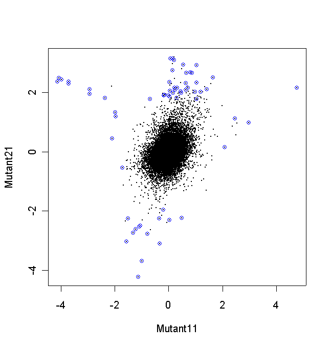
This scatterplot allows the genes to be visually clustered according to
whether they are differentially expressed in the mutant at the two times.
We will now collate the results of the two fits.
> fit <- fitIA
> fit$coefficients <- cbind(fitMt$coef,fitIA$coef)
> fit$coefficients <- fit$coef[,c(1,2,4,3,6)]
> fit$coef[1:5,]
Mutant11 Mutant21 TimeWt TimeMt I/A
[1,] -0.5396 0.1670 1.3362 2.043 0.7066
[2,] 0.2481 0.8601 -0.9112 -0.299 0.6120
[3,] -1.1368 -0.5642 -0.0119 0.561 0.5726
[4,] -1.0166 -0.5837 0.0837 0.517 0.4329
[5,] 0.0135 0.0614 0.3701 0.418 0.0479
> fit$stdev.unscaled <- cbind(fitMt$std,fitIA$std)
> fit$stdev.unscaled <- fit$std[,c(1,2,4,3,6)]
> fit$std[1:5,]
Mutant11 Mutant21 TimeWt TimeMt I/A
[1,] 0.866 0.866 0.866 0.866 1
[2,] 0.866 0.866 0.866 0.866 1
[3,] 0.866 0.866 0.866 0.866 1
[4,] 0.866 0.866 0.866 0.866 1
[5,] 0.866 0.866 0.866 0.866 1
> eb <- ebayes(fit)
> heatdiagram(abs(eb$t),fit$coef,"Mutant21",names=gal$Name)
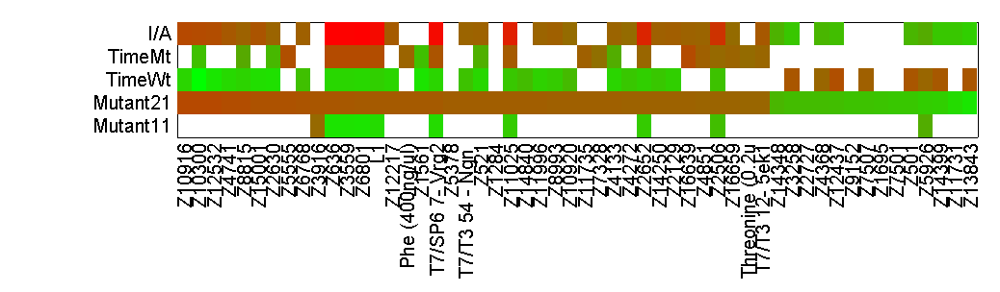
This heat diagram shows the expression profiles for all genes judged to be differentially expressed (|t| > 4) with respect to Mutant21. The genes are sorted from left to right in terms of their coefficients for Mutant21, with red meaning up-regulation and green meaning down-regulation. It is especially interesting to see that genes which are up-regulated (red) in the mutant at 21 days are those which have decreasing expression in the wild-type over time, and those which are down-regulated (green) in the mutant are those which increase over time in the wild-type. The mutant is not participating in normal development between 11 and 21 days in respect of these genes.
In this section we consider a case study in which all genes (ESTs and controls) are printed more than once on the array. This means that there is both within-array and between-array replication for each gene. The structure of the experiment is therefore essentially a randomized block experiment for each gene. The approach taken here is to estimate a common correlation for all the genes for between within-array duplicates. The theory behind the approach is explained in Smyth, Michaud and Scott (2003). This approach assumes that all genes are replicated the same number of times on the array and that the spacing between the replicates is entirely regular.
In this example we assume that the data is available as an RG list.
Background. This data is from a study of transcription factors critical to B cell maturation by Lynn Corcoran and Wendy Dietrich at the WEHI. Mice which have a targeted mutation in the Bob (OBF-1) transcription factor display a number of abnormalities in the B lymphocyte compartment of the immune system. Immature B cells that have emigrated from the bone marrow fail to differentiate into full fledged B cells, resulting in a notable deficit of mature B cells.
Arrays. Arrays were printed with expressed sequence tags (ESTs) from the National Institute of Aging 15k mouse clone library, plus a range of positive, negative and calibration controls. The arrays were printed using a 48 tip print head and 26x26 spots in each tip group. Data from 24 of the tip groups are given here. Every gene (ESTs and controls) was printed twice on each array.
Hybridizations. A retrovirus was used to add Bob back to a Bob deficient cell line. Two RNA sources were compared using 2 dye-swap pairs of microarrays. One RNA source was obtained from the Bob deficient cell line after the retrovirus was used to add GFP ("green fluorescent protein", a neutral protein). The other RNA source was obtained after adding both GFP and Bob protein. RNA from Bob+GFP was labelled with Cy5 in arrays 2 and 4, and with Cy3 in arrays 1 and 4.
> objects() [1] "design" "gal" "layout" "RG" > design [1] -1 1 -1 1 > gal[1:40,] Library Name 1 Control cDNA1.500 2 Control cDNA1.500 3 Control Printing.buffer 4 Control Printing.buffer 5 Control Printing.buffer 6 Control Printing.buffer 7 Control Printing.buffer 8 Control Printing.buffer 9 Control cDNA1.500 10 Control cDNA1.500 11 Control Printing.buffer 12 Control Printing.buffer 13 Control Printing.buffer 14 Control Printing.buffer 15 Control Printing.buffer 16 Control Printing.buffer 17 Control cDNA1.500 18 Control cDNA1.500 19 Control Printing.buffer 20 Control Printing.buffer 21 Control Printing.buffer 22 Control Printing.buffer 23 Control Printing.buffer 24 Control Printing.buffer 25 Control cDNA1.500 26 Control cDNA1.500 27 NIA15k H31 28 NIA15k H31 29 NIA15k H32 30 NIA15k H32 31 NIA15k H33 32 NIA15k H33 33 NIA15k H34 34 NIA15k H34 35 NIA15k H35 36 NIA15k H35 37 NIA15k H36 38 NIA15k H36 39 NIA15k H37 40 NIA15k H37
Although there are only four arrays, we have a total of eight spots for each gene, and more for the controls. Naturally the two M-values obtained from duplicate spots on the same array are highly correlated. The problem is how to make use of the duplicate spots in the best way. The approach taken here is to estimate the spatial correlation between the adjacent spots using REML and then to conduct the usual analysis of the arrays using generalized least squares.
First normalize the data using print-tip loess regression.
> MA <- normalizeWithinArrays(RG,layout)
Now estimate the spatial correlation. We estimate a correlation term by REML for each gene, and then take a trimmed mean on the atanh scale to estimate the overall correlation. This command takes a lot of time, perhaps as much as an hour for a series of arrays.
> cor <- duplicateCorrelation(MA,design,ndups=2) # This is a slow computation! > cor$consensus.correlation [1] 0.571377 > boxplot(cor$all.correlations)
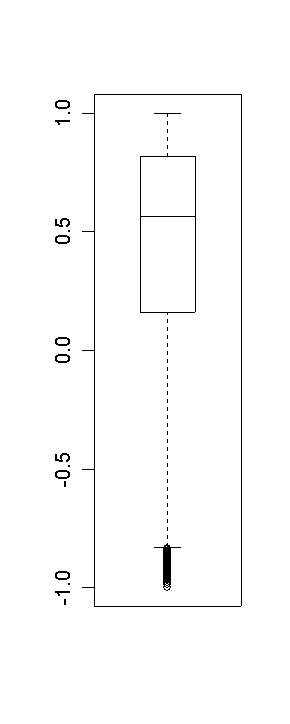
> fit <- lmFit(MA,design,ndups=2,correlation=0.571377)
> fit <- eBayes(fit)
> topTable(fit,n=30,adjust="fdr")
Name M t P.Value B
1 H34599 0.4035865 13.053838 0.0004860773 7.995550
2 H31324 -0.5196599 -12.302094 0.0004860773 7.499712
3 H33309 0.4203320 12.089742 0.0004860773 7.352862
4 H3440 0.5678168 11.664229 0.0004860773 7.049065
5 H36795 0.4600335 11.608550 0.0004860773 7.008343
6 H3121 0.4408640 11.362917 0.0004860773 6.825927
7 H36999 0.3806754 11.276571 0.0004860773 6.760715
8 H3132 0.3699805 11.270201 0.0004860773 6.755881
9 H32838 1.6404839 11.213454 0.0004860773 6.712681
10 H36207 -0.3930972 -11.139510 0.0004860773 6.656013
11 H37168 0.3909476 10.839880 0.0005405097 6.421932
12 H31831 -0.3738452 -10.706775 0.0005405097 6.315602
13 H32014 0.3630416 10.574797 0.0005405097 6.208714
14 H34471 -0.3532587 -10.496483 0.0005405097 6.144590
15 H37558 0.5319192 10.493157 0.0005405097 6.141856
16 H3126 0.3849980 10.467091 0.0005405097 6.120389
17 H34360 -0.3409371 -10.308779 0.0005852911 5.988745
18 H36794 0.4716704 10.145670 0.0006399135 5.850807
19 H3329 0.4125222 10.009042 0.0006660758 5.733424
20 H35017 0.4337911 9.935639 0.0006660758 5.669656
21 H32367 0.4092668 9.765338 0.0006660758 5.519781
22 H32678 0.4608290 9.763809 0.0006660758 5.518423
23 H31232 -0.3717084 -9.758581 0.0006660758 5.513778
24 H3111 0.3693533 9.745794 0.0006660758 5.502407
25 H34258 0.2991668 9.722656 0.0006660758 5.481790
26 H32159 0.4183633 9.702614 0.0006660758 5.463892
27 H33192 -0.4095032 -9.590227 0.0007130533 5.362809
28 H35961 -0.3624470 -9.508868 0.0007205823 5.288871
29 H36025 0.4265827 9.503974 0.0007205823 5.284403
30 H3416 0.3401763 9.316136 0.0008096722 5.111117
> plot(fit$coef,eb$lods,xlab="Log2 Fold Change",ylab="Log Odds",pch=16,cex=0.2)
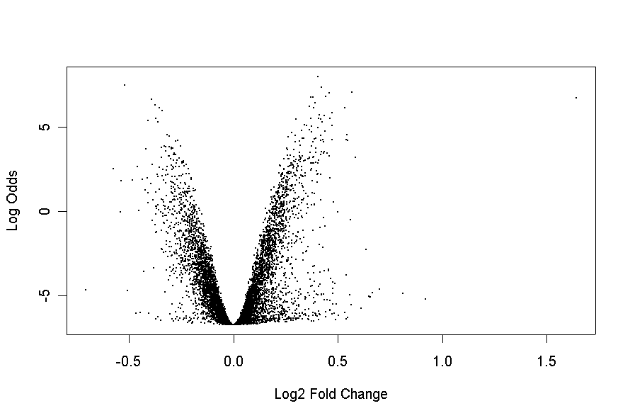
The package marray is
designed to read and normalize cDNA data. The marray package provides location and scale normalization
of M-values, rather than the within and between-array approach of limma, and provides some
normalization methods which are not in limma. Data input using the
marray packages produces a data object of class marrayRaw. Normalization using marrayNorm will produce a
data object
of class marrayNorm. Suppose that you have an marrayNorm
object called Data.
The marrayNorm data object may be used
directly in the lmFit function in limma, for example
> fit <- lmFit(Data, design)
after which one proceeds exactly as in previous sections.
Alternatively, you may convert marray data objects to limma data objects
using the convert package. marrayRaw objects may be converted to
RGList objects and marrayNorm objects to MAList
objects:
> library(convert) > MA <- as(Data, "MAList")
We provide a short background on the topic of single-channel normalization for two color arrays. Throughout this section the ApoAI data set will be used to demonstrate single-channel normalization.
Load the ApoAI data and perform background correction
on the RGList data object:
> load("ApoAI.RData")
> RG.b <-backgroundCorrect(RG,method="minimum")
cDNA (or oligo) microarrays compare the gene expression between two different sources of RNA for thousands of genes simultaneously. In general, the log-ratio of spot intensities for the red and green channels form the primary data used for downstream analysis. Thus traditional normalization methods, which remove systematic variation in microarray data, focus on adjusting the log-ratios within each slide. However sometimes it is desirable to work with single-channel (log-intensity) data rather than the log-ratios and so new techniques for normalizing such single-channel data have been investigated. In the current literature there has been limited attention given to single-channel normalization despite many groups basing their entire analyses on single channel data. Single- channel data display a higher level of systematic variation than that observed in log-ratio data.
For example below are imageplots of the log-intensity
single-channels and the log-ratio for a single array from the ApoAI
data set. (The imageplots below are based on non-normalised
background corrected data). Clearly some of the systematic spatial variation is
cancelled out by forming the log-ratio. This is just a simple
demonstration of how M-values are less noisy than single-channels.
> imageplot(log(RG.b$R[,4],2), layout, low="white", high="red")
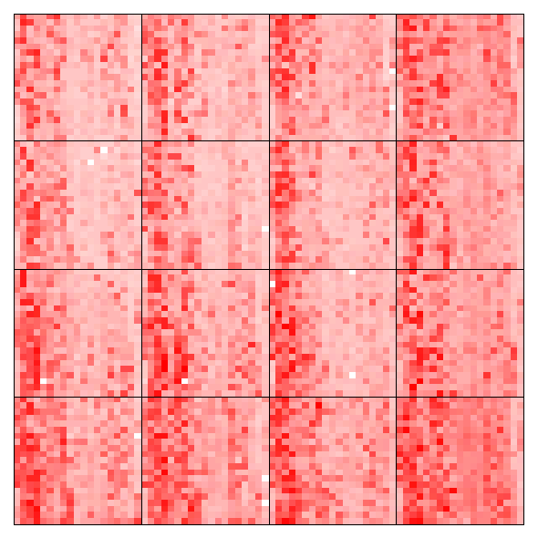
> imageplot(log(RG.b$G[,4],2), layout, low="white", high="green")
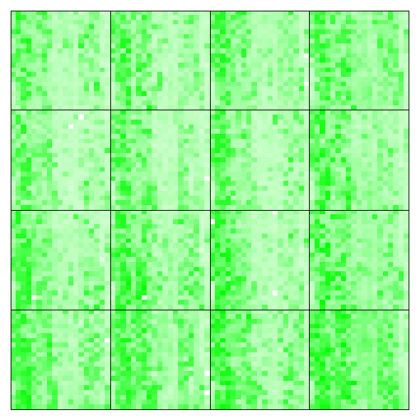
> imageplot(log(MA.n$M[,4],2), layout, low="white", high="blue")
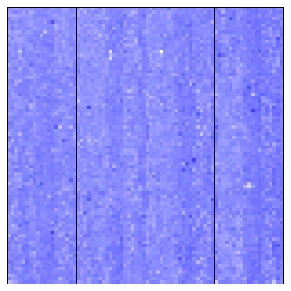
It should be noted that analysing log-ratios corresponds to doing all analysis on the basis of within-array contrasts while the single-channel approach gives the possibility of recovering information from the between-array variation. This should only be considered after careful single- channel normalization to remove uncontrolled systematic effects at the array level. Yang and Thorne (2003) provides an outline of the motivations for performing single-channel (log-intensity) analysis. We currently perform single-channel normalization using a quantile method based on Bolstad et al.'s quantile normalization of high density oligonucleotide data). In the following we demonstrate within-slide and between-slide single-channel normalization routines. We use the ApoAI data set to illustrate the methods.
We perform the normalization of single-channel data using methods
in the normalizeWithinArrays and
normalizeBetweenArrays functions.
Note that RG.b contains unlogged single-channel
intensities and normalizeWithinArrays expects its input
RGlist to be unlogged. There is an argument
log.transform=F which needs to be implemented if the
RGlist supplied is already logged. The following command
creates an MAList containing non-normalized background
corrected values.
> MA.n <-normalizeWithinArrays(RG.b,layout,method="n")
Next we normalize the M-values via the default within array
normalization of printtiploess (we could have use the
method loess instead, but we find that
printtiploess is often a good choice since it acts as a proxy
for spatial normalization of the Mvalues.
> MA.p <-normalizeWithinArrays(RG.b,layout)
At any stage we can recover the RGList of normalized
single-channels using RG.MA. RG.MA(MA.p)
would give us within-array only normalized single-channels. Next we
perform between array normalization of the single-channels. We use the
function normalizeBetweenArrays which takes and returns
an MAList. normalizeBetweenArrays forms an RG matrix when implementing the quantile
normalization method on the single-channels; and although it returns
an MAList the single-channel normalised values can be
obtained by using the function RG.MA. We show how to
implement the following between array normalization methods
respectively, quantile normalization between all single-channels
only (q); quantile normalization after printtiploess
normalization within arrays (pq); quantile normalization
between the arrays on the Aq values which is then
combined with the within array printtiploess normalization
Mp to give MpAq . Notice that for
MpAq we have mixed and matched different within and between
array normlizations to create a simultaneous within and between
array single-channel normalization method.
> MA.q <- normalizeBetweenArrays(MA.n, method="quantile")
> MA.pq <- normalizeBetweenArrays(MA.p, method="quantile")
> MA.Aq <- normalizeBetweenArrays(MA.n, method="Aquantile")
> MA.MpAq <- new("MAList", list(M=MA.p$M, A=MA.Aq$A))
We find that pq and MpAq work quite well. Next we
show some plots of the single-channel log-intensity densities which
illustrate the results of the different single-channel normalization methods. We use the function plotDensities which will
take either an RGList or an MAList . The
form of the call is: plotDensities(object, log.transform = FALSE, arrays = NULL, singlechannels = NULL,
groups = NULL, col = NULL).
The default usage of plotDensities results in red/green coloring of the densities.
Without any background correction there is a significant difference between the red and green single-channel intensity distributions:
> plotDensities(RG, log.transform=TRUE)
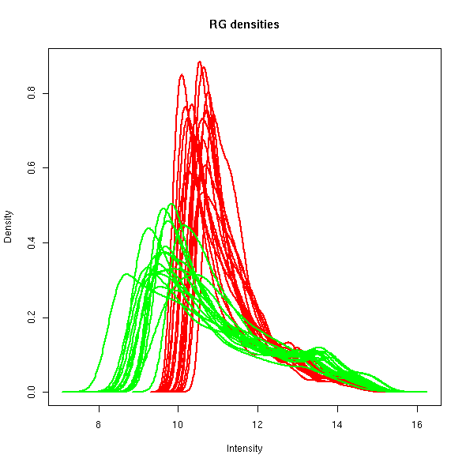
> plotDensities(RG.b, log.transform=TRUE)

> plotDensities(MA.n)
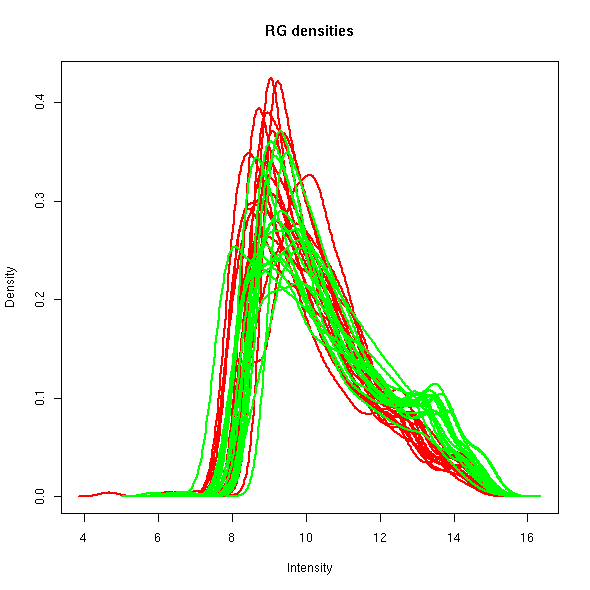
Printtiploess makes the single-channels within arrays
similar:
> plotDensities(MA.p)
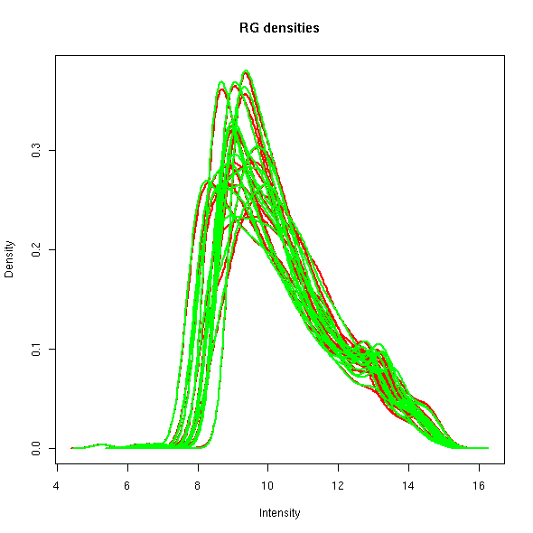
All the single-channels have the same distribution.
> plotDensities(MA.q, col="black")
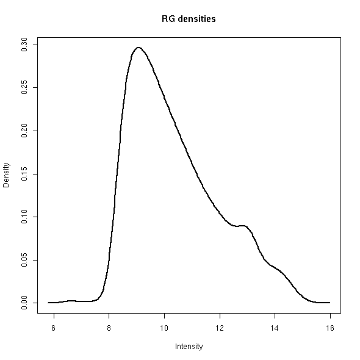
> plotDensities(MA.pq, col="black")
MpAq gives very similar results as pq.
> plotDensities(MA.MpAq)
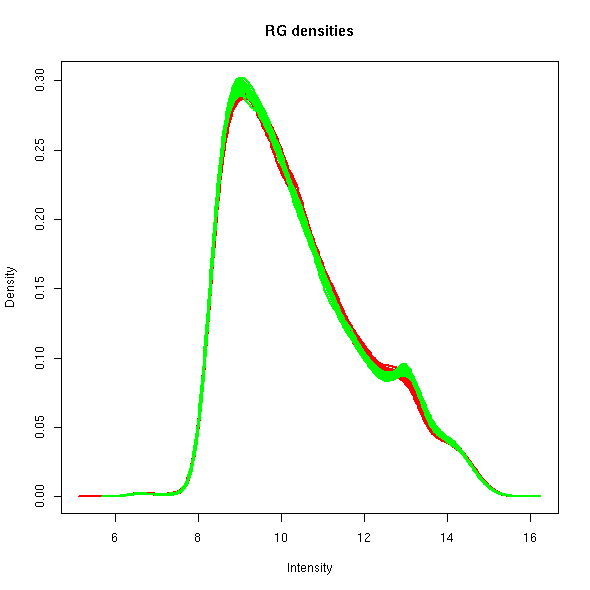
Where possible, limma tries to use the convention that class names are in upper CamelCase, i.e., the first letter of each word is capitalized, while function names are in lower camelCase, i.e., first word is lowercase. When periods appear in function names, the first word should be an action while the second word is the name of a type of object on which the function acts.
Thanks to Yee Hwa Yang and Sandrine Dudoit for the first three data sets. The Swirl zebrafish data were provided by Katrin Wuennenburg-Stapleton from the Ngai Lab at UC Berkeley. Laurent Gautier made the ecoliLeucine data set available on Bioconductor. Lynn Corcoran provided the Bob Mutant data.
The following articles are not cited in the User's Guide but are examples of biologically orientated publications which use the limma package.